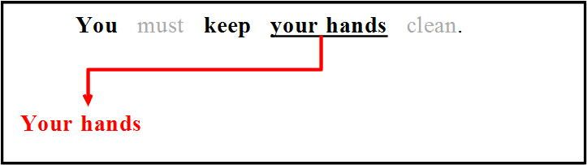
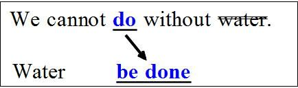
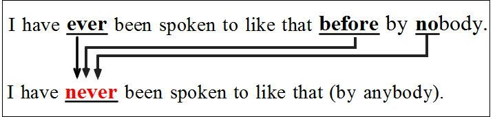
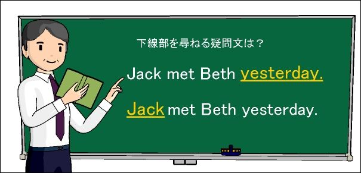
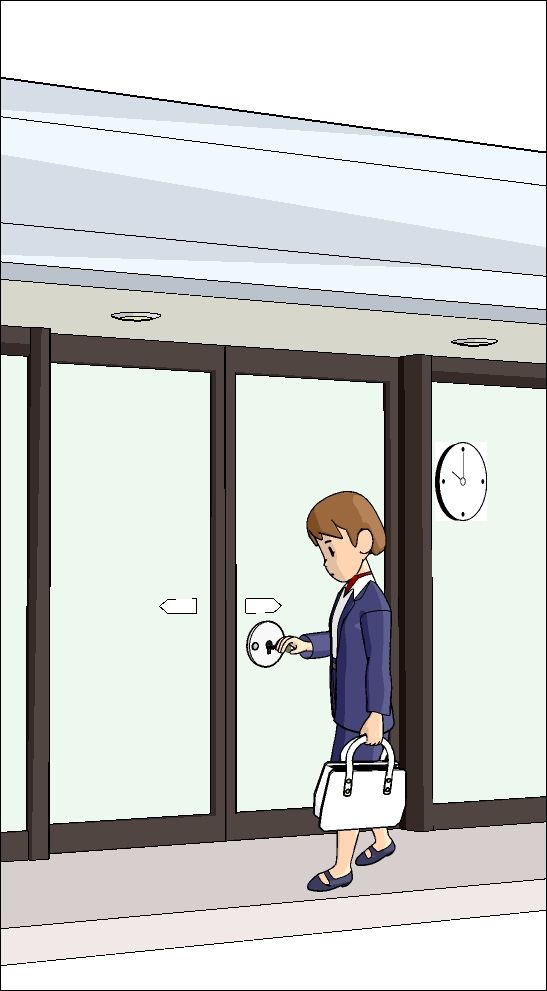
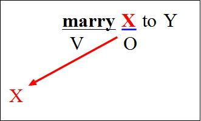
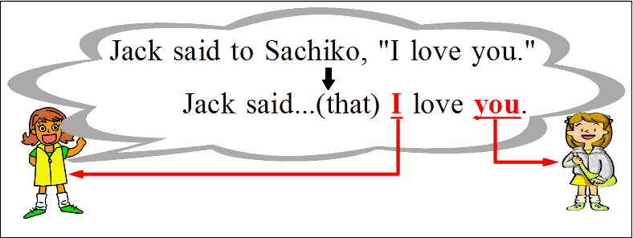
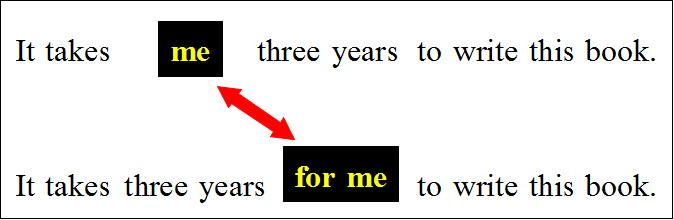

| どうしてそうなる 英文法＆イディオム 3 態・話法・動詞の語法 | |
| 橋 明男 | |
| (2014) | |
どうしてそうなる 英文法＆イディオム
－大学受験・TOEIC対策－
vol. ３ 態（受動態・能動態）・話法・動詞の語法
橋 明男
ver. 1.00 (2014/08/15)
第3巻はしがき
第1巻（時制）、
第2巻（仮定法・助動詞）、
第5巻（関係詞）
に続いて、「態（受動態・能動態）、話法、動詞の語法」を扱います。
これらの内容を他の文法書などで一度は学習したことがある方を念頭におき、かなりハイレベルな内容になっています。
執筆者紹介
（氏名）橋 明男（はしあきお）
（学歴）都立西高卒業。東大文一合格、東大法学部卒。
（職業）東京都内で学習塾を経営。これまでに大学受験英語の参考書を多数執筆。
「どうしてそうなる英文法＆イディオム」について
全体の構成として
第一部が英文法、
第二部がイディオム
です。
（第一部英文法について）
大学受験の英文法を楽しく学ぶ（Enjoy Grammar）を基本コンセプトに、アメブロ（アメーバ・ブログ）で4年間にわたって執筆してきたものに加筆・修正を行いました。
これまでの英文法の学習は退屈な丸暗記が中心でした。
しかし「どうしてそうなるのか」がわかると、勉強は楽しくなります。
そこで「理屈がわかれば勉強は楽しい」を基本理念に、「どうしてそうなるのか」をわかりやすく解説したのが本書です。
「大学受験に必要だからイヤイヤ学ぶ」ではなく、
「どうしてそうなるのか、もっと知りたい」という気持ちになれる文法書を目指しました。
（第二部イディオムについて）
第一部（英文法）と同様、「どうしてこの熟語が生まれたのか」を解説します。
このような説明ができないイディオム（熟語）は、全熟語の10％ほどしかありません。
残った全熟語のおよそ90％は、解説を読めばきっと「なるほど」と思って頂けるでしょう。
そういう熟語はすぐに覚えられますし、たとえ忘れかけたとしても「理解の糸」を手がかりに、失った記憶をたぐり寄せることができます。
ここでも「なるほど」と理解できれば、勉強は楽しくなるのはもちろんです。
つまり理屈を理解すれば、楽しく学べて、覚えやすく忘れにくくなるわけです。
英文法も熟語も退屈な丸暗記はやめて、楽しく勉強しましょう。そう、勉強は楽しいものなのですから。
＜対象読者＞
①トップレベルの大学受験生（高3生、浪人生）および、高校1・２年生。
具体的には明治・青学・立教などのいわゆるMarchから、早慶・旧帝大を志望される方を念頭に置いています。
②TOEIC・英検などの試験に向けて英文法を学ばれている方（大学生・社会人）。
③英文法が苦手な先生方。
高校生を指導されている学校の先生方の中には、英文法が苦手だという方が結構多くいらっしゃるようです。そのような場合は本書を活用していただければ、学校の授業を楽しい(interesting)ものにする一助になるかもしれません。
＜本書の構成と読み方＞
本書は「解説」部分と「問題演習」の部分に大きく分けられます。
「解説」の部分は、理解することを第一にお読み下さい。
「問題演習」は2つの種類に分けられます。
第一は基礎的な問題で、【基礎－確認問題A】のように表記されています。
第二は実践的な問題で【第３巻 確認問題１】のように表記されています。
前者が１０問、後者が４０問、合計５０問の問題があります。
前者は基礎的な問題で、解説と密接な関係があります。ですから問題を解きながら解説を読み進めていくスタイルをおすすめ致します。
他方後者は大学入試に実際に出題された問題で、出題校も明示しました。
これらは入試問題の中でもかなり難しい問題を選んであります。
ほとんどが解説内容を理解していることを前提にした、応用問題です。
ですから学力に応じて次のようにお読み下さい。
【目安】(1)これまでに高校の英文法を１年以上学習されてきた方（主に高校3年生・浪人生。きちんと学習してきた高校２年生。TOEIC受験者）：実際に問題を解きながら読み進めて下さい。
(2)高校の英文法の学習が1年未満の方（高校１・２年生）：わからない単語も出てくるでしょう。その場合は辞書で調べながら、解いてみましょう。２回読むつもりで、１回目は答えを見ながら内容を理解することに重点を置いて下さい。２回目は実際に問題を解きながら読み進めてみましょう。
＜発行予定＞
以下のシリーズを予定しています。vol番号は変更になる場合があります。★は発行済み。
★vol.1 時制
★vol.2 助動詞・仮定法
★vol.3 受動態・動詞の語法・話法
vol.4 準動詞（不定詞・動名詞・分詞）
★vol.5 関係詞（関係代名詞・関係副詞・関係形容詞）
vol.6 接続詞
vol.7 形容詞・副詞・比較
vol.8 疑問文・感嘆文・会話表現
vol.9 名詞・代名詞・冠詞
前置詞は「熟語編」としてvol.10以降を予定。
第１章 受動態の作り方（その１）
「受動態」というのは
「その少年はみんなから愛されている」
のように、「...される、...されている」の意味を表す表現で「受け身」ともいう。これは「be動詞+過去分詞」を使って表現する。上の日本文は次のようになる。
(1) The boyis loved by everybody.
このように「...され（てい）る」の意味を表す文を「受動態の文」とか、「受け身の文」という。
上の文の内容は受動態を使わずにeverybodyを主語にして、次のようにも表現できる。
(2) Everybody loves the boy.
これは「みんながその少年を愛している」の意味である。
(2)のように「...している」などの意味を表す文を、「能動態の文」という。
つまり、受動態（受け身）と能動態とは、対（つい）の関係に立つわけだ。そして能動態と受動態の関係を詳しく勉強しようという場合に、その分野のことを「態（たい）」と呼ぶ。受動態という言葉は多くの人が知っているが、「能動態」とか「態」という言葉を知らない人が多い。だからこれらの文法用語をまずは覚えていただきたい。
受動態の基本は中学で学習済みだ。だからここではその内容を簡単に確認しておこう。
受動態で第一のテーマは能動態→受動態の書き換えである。
【基礎－確認問題A】
次の英文を受動態にせよ。
Kate broke the glass.
【基礎－確認問題A－解説・解答】
能動態から受動態を作る場合は、
①能動態の目的語を主語に変え、
②動詞を「be+過去分詞」にし、
③元の主語にbyを付けて「by+元の主語」
という形で行う。
詳しく見てみよう。
①目的語のthe glassを主語にする。

②動詞のbrokeをbe+過去分詞の形、つまりbe brokenにする。ただし、元の英文はbroke、つまり過去時制を使っていたからbeをwasにする。
③主語のKateをby Kateにする。

このようにすれば受動態は完成だ。
（解答）The glass was broken by Kate.
第２章 文型と受動態（S+V+O+C）
前章までは比較的簡単で、中学でも学ぶ内容だ。
ともかく基本は
①能動態の目的語を主語にし、
②動詞を「be+過去分詞」にする、
③元の主語を「by+元の主語」の形に変える、
ということだ。
これからはこの三つを受動態の作り方の「基本三原則」と呼ぶことにしよう。
能動態から受動態への書き換えについては、このような「基本三原則」を中学で学習された方も多いだろう。私も中学生を指導するときにはこの「基本三原則」を何度も反復する。ただ、もう少し高度な内容を学習するようになると、この三原則だけでは足りなくなる。あと一つだけ付け加えて「四原則」にする必要がある。
このことを次の問題を解きながら見ていこう。
【基礎－確認問題B】
次の英文を受動態にせよ。
We call the boy Tom.
【基礎－確認問題B－解説・解答】
このような問題にすると、Tom is called...(×)とする人が多い。
上の文章は「私たちは彼をトムと呼ぶ」の意味でS+V+O+Cの文型である。
Tomを主語にした人は、漠然と「後ろの方にある語を主語にしよう」と考えたのではないだろうか。そのような人は、文型がどうなっているのかを、普段余り注意していない傾向があるようだ。
受動態の勉強は、能動態・受動態の理解の問題だけにとどまらない。文型についての理解を深める働きもある。そして文型の理解は、英文法だけでなく英文解釈や英作文についての理解を更に深めてくれる。文型を意識しながら英語の勉強を進めていくのが、学力を上げるための一番の近道だ、これが長年高校生達を指導してきて痛切に感じることである。
文型を学習する重要性を強調したついでに、目的語(O)と補語(C)について、簡単に整理しておこう。
目的語(O)は「...を」「...に」などの意味を表し、その動作の目的（対象）になるものをいう。ここでは「その少年を呼ぶ」という意味になり、「呼ぶ」という行為の目的（対象）はその少年(the boy)である。だから「その少年(the boy)」は「呼ぶ(call)」の目的語である。
他方補語(C)は「イコールの関係」が成り立つものをいう。例えば、
He is a policeman.
(彼は警察官だ）
では「彼(he) = 警察官(policeman)」という関係が成り立つ。だから「警察官(a policeman)」は補語である。従ってHe is a policeman.はS+V+Cの文型ということになる。
S+V+Cの文型ではS=Cであるが、S+V+O+Cの文型ではO=Cの関係になる。
We call the boy Tom.
（私たちはその少年をトムと呼ぶ）
ではthe boy = Tomの関係が成り立つ。
S=Cの関係が成り立つか、それともO=Cの関係が成り立つかの違いはあるが、「イコールの関係」が成り立つことはどちらも同じである。
このように「イコールの関係」が成り立つものを補語(C)という。
今まで文型をおろそかにしてきた人は、
「『...を』『...に』の訳が成立するか」、
それとも
「『イコールの関係』が成立するか」
に注意して、文型を分析する習慣を是非身に付けて下さい。そうすれば「態の問題が出来るようになる」という当面の課題だけでなく、英語全般についてあなたの学力が向上することだろう。
目的語と補語の話が終わったので、受動態の作り方に話を戻そう。
上の文では目的語はTomではなく、the boyである。
受動態を作る時は、「目的語」を主語にしなければならない。
だからThe boyを主語にしなければならないわけだ。
そして動詞をbe動詞+過去分詞にするから、
The boy is called...となる。
また主語のWeはby usとすればよい。
ここまでは何の問題もなく進められるだろう。
問題はTomをどうするか、である。
結論としては上の図のようになる。
つまり目的語だったthe boyが主語になり(The boy)、動詞がis calledとなる。そして残ったTomはis calledの後ろにそのまま続く。
そして元の主語が「by+元の主語」となって文末に来る。この「by+元の主語」は副詞句だから、文の中での位置は比較的自由だが、多くの場合はこのように文末に置く。
（解答）The boy is called Tom (by us).
これからどんどん複雑な英文を考えていくわけだが、ここでのTomのように「残った語句は元の文の位置にそのまま置く」というのがポイントである。
この「残った語句はそのまま」という指針は、受動態の問題を解く際に大きな武器になる。このことは、これ以降の内容を読み進めてもらえば、きっと納得してもらえることだろう。
【基礎－確認問題C】
次の英文を受動態にせよ。
Jack gave me this book.
【基礎－確認問題C－解説・解答】
できる英文は、二種類（厳密に言えば三種類）ある。
まず、与えられた英文は「ジャックは私にこの本をくれた」の意味でS+V+O+Oの文型であることに着目しよう。
受動態は目的語を主語にする。そしてこの文では目的語が二つある。だから受動態は二通りできることになる。
まずmeを主語とした時は、gaveがwas givenに、主語のJackはby Jackになる(ただし、by Jackは省略されることもある）。
このままだとthe bookが処理されず残ってしまうから、was givenの後ろに続ける。「残ったものはそのまま持ってくる」ということだ。
このようにして受動態の第一のものは次のようになる。
I was given the book (by Jack).
次は、もう一つの目的語であるthe bookを主語にした受動態を考えてみよう。やり方はこれまでと同じである。
the bookが主語になり、gaveがwas givenになり、meをそのまま持ってくる。
そしてJackがby Jackになって文末に来る。
考え方はこれまでと全く同じだ。
こうして受動態の第二のものは次のようになる。
The book was given me (by Jack).
ところでS+V+O+Oの文は次のようにS+V+Oの形に書き換えることができる。
to meは「前置詞+名詞」の形で、全体では副詞の働きをする(上図のMは「修飾語Modifier」のM）。
このように書き換えた英文では、目的語はthe bookだからこれを主語にした受動態は、次のようになる。
the bookが主語になり、gaveがwas givenになる。
この文ではto meとなっているから、これをそのまま持ってくる。
そして最後にby Jackが来る。
こうして第三の受動態ができあがる。
The book was givento me (by Jack).
これは受動態にする前の能動態の文でto meとなっているから、これを受動態に書き換えた場合もto meとなっているわけだ。
結局受動態は次の三つの形が可能だということになる。
① I was given the book (by Jack).
② The book was given me (by Jack).
③ The book was givento me (by Jack).
【基礎－確認問題D】
次の英文を受動態にせよ。
We can see the tower from here.
【基礎－確認問題D－解説・解答】
the towerが目的語だからこれが受動態の主語になる。
動詞のseeをbe+過去分詞の形（be seen）に変える。
ここで注意してもらいたいのは、「動詞」というのはcan see(×)ではなく、「seeだけ」だという点である。あくまでも「中心的な働きをする動詞一つ」に着目し、それだけを「be+過去分詞」に変える。
だからこの段階では助動詞のcanは変化させず、そのまま残す。
Weをby usにして文末に置く。
「受動態の作り方」の基本に従えばこのようになる。
ここまでの処理で、残ったのはcanとfrom hereである。このような「残った語句」は元の英文の位置にそのまま置けばよい。
（解答）The tower can be seen from here (by us).
「残った語句を元の英文の位置にそのまま置く」というのは、例えばcanのような助動詞ならThe towerのような主語の直後に置くということだし、from hereは上図のように「by+能動態の主語」の前に置くということである。
繰り返しになるが、can seeのように動詞(see)に別の語が付着している場合は、「中心的な働きを持つ動詞一つ」だけを「be+過去分詞」に変える。そしてcanは「残りの語」として処理する、ということである。
ここでは助動詞のcanについて見てみたが、それ以外の表現の場合も基本的には同じである。
次はちょっと難しくなって入試問題のレベル。
【基礎－確認問題E】
You must keep your hands clean.
=Your hands must（ ）（ ）（ ）.
(中京大)
【基礎－確認問題E－解説・解答】
keep your hands cleanの部分がS+V+O+Cの文型になっていることに注意しよう。
keep+O+Cは「OをCの状態に保つ」の意味だ。
目的語はyour handsだからこれが主語になる。

動詞のkeepがbe keptになる。
ここでも変えるのはkeepだけで、mustはそのまま残す。
主語のYouがby youになって文末に移動する。
問題文ではこのby youは省略されている。
残りのmust, cleanは元の位置にそのまま残す。
（解答）Your hands must be kept clean (by you).
このように、「受動態の作り方」に忠実に従えば、容易に受動態の文章が作れるわけだ。
大切なことは、
「基本四原則」の中の二番目、
「動詞をbe+過去分詞に変える」
で「be+過去分詞」に変えるのは、「中心的な意味を持つ動詞一つ」に限るということである。
これを忠実に守らないと、英文が複雑になってきた場合にうまく対処できなくなる。
【基礎－確認問題F】
次の英文を受動態にせよ。
Jack has washed the car.
【基礎－確認問題F－解説・解答】
問題の英文のJack has washedは現在完了である。「ジャックはその車を洗い終わっている」(完了)とか「洗ったことがある」(経験)などの意味。
現在完了の英文を受動態に変える場合にも、基本的な考え方はこれまでと同じである。
目的語のthe carを主語にする。動詞はhas washedだが、「中心的な意味を持つ動詞」はwashedだからこれをbe washedに変える。そしてJackをby Jackに変えて文末に置く。
ここまでの内容を図で示すと上のようになる。
この段階では、hasが何も手を加えられずに残っている。
そして「残ったものはそのまま持ってくる」。ただしこれを行うと、
The car hasbe washed...(×)となってしまう。
しかしこのようなhas be washed(×)という表現は英語にはない。
元々の表現は現在完了で「have+過去分詞」の形をしていたのだから、beを過去分詞のbeenに変えなければならない。
（解答）The car has been washed by Jack.
「残りの語句を持ってくる」という最後の段階で、be動詞は時制に合わせて変化させる必要がある。つまりbe動詞は形が変わる、ということに注意しよう。
実はこのような処理をあなたは既に無意識に行ってきているのである。
受動態の冒頭部分で
Kate broke the glass.
の受動態を作った。これをもう一度振り返ってみよう。
目的語のthe glassが主語になって文頭に来る。
そして動詞のbrokeをbe+過去分詞の形に変えるわけだが、be brokenとはせずにbe動詞を変化させてwas brokenとする。
元の英文が過去で、主語が単数のThe glassだからwasにする、という判断をしているわけだ。
このように「be+過去分詞」のbe動詞はその文の動詞として、主語や時制に応じて適切な形に変化させなければならない。
そしてそれが現在完了の「have+過去分詞」であるならbeを過去分詞(been)にしなければならない、というわけだ。動詞goを使った英文を現在完了にするとhavegoneになる(goが過去分詞のgoneになる）のと同じように、be動詞が過去分詞のbeenに変わってhave beenになるというわけだ。
受動態の「be+過去分詞」で、be動詞がその文の動詞であり、これが色々な形に変化することに留意しよう。
このような考え方をマスターできれば、「受動態の時制」の学習は終わったも同然である。
ここまでの考えを前提にして、進行形の受動態を考えてみよう。
【基礎－確認問題G】
次の英文を受動態にせよ。
Jack and Beth are washing the car.
【基礎－確認問題G－解説・解答】
まず文型を確認しよう。
Jack and Bethが主語(S)、are washingが動詞(V)、the carが目的語(O)のS+V+Oの文型である。
①目的語のthe carを主語にする。
②動詞(are washing)で中心となる動詞washingをbe washedに変える。areにはまだ手をつけない。
③Jack and Bethをby Jack and Bethにして文末に置く。
ここまでの変化を図示すると次のようになる。
④「残り」をそのまま持ってくる。「残り」はareだけだからそのままの位置に置けばよい。ただし主語がThe carなのに動詞をareにすることはできないからisに改める。
⑤最後にbe動詞を文の動詞と考えて適切な形にする。
例えば、goの進行形がis goingになり、playの進行形がis playingになるように、beを動詞と考えてこれをis beingにすればよいわけだ。
（解答）The caris being washed by Jack and Beth.
現在完了の受動態は「have been+過去分詞になる」
進行形の受動態は「is being+過去分詞になる」
と丸暗記するやり方もある。暗記としては大して難しいことではないからそれでもよいだろう。
ただ、進行形の受動態がどういう形になるのか失念してしまった場合は、上のように順序立てて考えていけば、忘れてしまった記憶をたぐり寄せることができるだろう。
第６章 演習問題（受動態の基本）
ここまでの内容を実際の入試問題で確認してみよう。
これまでの内容を確認する趣旨でチャレンジしていただきたい。ただし、難問ばかりを集めてあるから、間違えても落胆しないように。
【第３巻 確認問題１】
We want to go to the beach in his car on Saturday, because our car still won't （ ）.
（選択肢）
a. fixed
b. have been fixed
c. have fixed
d. having been fixed （センター試験）
【第３巻 確認問題１解説・解答】
fixは「...を修理する」の意味がある。
「私たちは土曜日に彼の車でビーチに行きたい。なぜならば私たちの車はまだ修理が終わっていないだろうから」の意味。ちょっとわかりにくいが、土曜日に車でビーチに行く。だがその日（土曜日）には私たちの車の修理はまだ終わっていないだろう。だから私たちは彼の車で行きたい、という話だ。
土曜日という未来の時点で、「修理する(fix)」という行為が完了しているかどうかということだから、未来のある時点での動作の完了を表す未来完了(will have+過去分詞←「現在完了の未来形」詳しくは時制の巻参照）を使うべき場合である。
そして車は「修理される(be fixed)」わけだから、be fixedを未来完了(will have+過去分詞）にすればよい。be fixedのbeが動詞だと考えれば、will havebeen fixedとなることが分かるだろう。
（解答）b. (have been fixed)
【第３巻 確認問題２】
The teacher wondered if the main point （ ）clear to all of the students.
（選択肢）
a. was making
b. was made
c. was made to
d. made （青山学院大）
【第３巻 確認問題２解説・解答】
「教師は、全ての生徒に要点が明確になっているだろうか、と思った」
the main pointは「要点」の意味(mainは「主な、主要な」の意味。pointは「要点、ポイント」の意味。だからthe main pointで「主要な要点」→「要点」ということ）。
問題文のthe main point ( ) clearで、選択肢はwas making, was made...などmakeの変化形が記されている。だからmakeとclear（明白な）に注目しよう。
makeはS+V+O+Cの文型で使われることがある。例えばThe news made them happy. (その知らせは彼らを幸せにした）。
そこでmake the main point clear (要点を明確にする）を受動態にすることを考えてみよう（the main pointが目的語(O)、clearが補語(C)のS+V+O+Cの文型）。
こうしてthe main point is made clearという英文が完成する。
従ってthe main pointwas made clearとなる(is madeが時制の一致の関係でwas madeになる）。
本問は文意も難しい。the main point is made clearは「要点が明確にされている」の意味。問題文ではこれにto all of the studentsという表現が加わっているから、全体では「全ての生徒に要点が明確にされている」「全ての生徒に要点が明確に伝わっている」ということ。
問題文全体の意味は次の通り。
「その教師は、要点が全ての生徒に明確につたわっているだろうか、と思った」の意味(wonder if S+Vは「...かしらと思う」の意味）。
（解答）b. (was made)
【第３巻 確認問題３】
"George," I said coldly, "if you have anything to say against the lady, it had better（ ） in my presence.
（選択肢）
a. not say
b. not to say
c. not to be said
d. not be said（西南学院大）
（注）in my presence：私の面前で
【第３巻 確認問題３解説・解答】
「『ジョージ、もし君が彼女の悪口を言いたいのなら、それは私の面前では言わない方がいいよ』と私は冷たく言った」の意味。
it had better ( ) in my presence（私の面前では言わない方がよい）は、you had better not say it in my presenceを受動態にした形にする(had betterにnotを付ける場合にはhad better notの語順になる）。
itを主語にしsayをbe saidに変える。
その他の語をそのまま移動する。
こういうやり方をすれば特に難しくはないだろう(it had better not be said in my presence (by you))。
it had better not be saidの和訳は難しいが、能動態に直してから訳を考えればよい（詳しくは後に「和訳の問題」で解説する）。
in my presenceのpresenceは「存在」の意味だからmy presenceは「私の存在」→「私が存在していること」の意味。inは<状態>を表す([例] in a hurry：急いで）。従って全体で「私が存在している状態で」→「私がいるところで、私の面前で」の意味。
第７章 群動詞の受動態（その１）
「群動詞の受動態」と呼ばれるテーマがある。これは「いかにも文法」という感じのテーマである。
「受動態は目的語を主語にする」という「受動態の作り方原則」の①で示した原則に関係する問題である。
まず「目的語を主語にする」ということは、目的語がなければ受動態は作れないことに注意しよう。英語は命令文を除いて、必ず主語がなければならない。そして受動態は能動態の目的語が主語になるのだから、元の文（能動態の文）に目的語がなければ受動態の文は作れないわけだ。
だからS+V+OやS+V+O+O, S+V+O+Cの文型では目的語(O)があるから受動態の文を作れる。しかしS+VやS+V+Cの文型では目的語(O)がないから、受動態を作ることはできない。
動詞の中には目的語を従えることが出来る動詞と、目的語を従えることができない動詞がある。
例えば、
Jack broke the glass.
(ジャックはそのグラスを壊した）
という英文では、the glass は「壊す」という動詞broke<breakの目的語(O)になっている。
このbreakのようにその直後に目的語を従える動詞を「他動詞」という。
これに対して、目的語を従えない動詞がある。例えば、「この鳥は話す」の
This bird talks.
という英文で「話す」の意味のtalkは目的語を従えていない。
このように目的語を従えない動詞を「自動詞」という。
英和辞典を調べる際には、自動詞と他動詞が分けて解説されているのが普通だ。だから両者の区別は正確にできるようにしておかなければならない。
初学者の中には、自動詞がどういう動詞で、他動詞がどういう動詞なのかをしっかり区別出来ていない人が時々いる。私は学生の頃次のように理解して暗記した記憶がある。参考までに。
＜私が学生時代に考えた覚え方＞
自動詞と他動詞の違いは、主語の後ろに来る動詞だけで文が成立できるかどうかの違いである。
Jack broke the glass.のbroke (break)のように、主語の後ろの動詞から見て、その動詞だけでは文は完成せず、他人つまり目的語が必要な動詞を他動詞という。
つまり「他人が必要な動詞＝他動詞」というわけだ（ここでいう「他人」は目的語のこと）。
これに対してThis bird talks. のtalks (talk)は目的語がなくても文が成立する。つまり「他人がいなくて自分だけでも文が成立する」わけだ。このように「他人がいなくても自分だけで文を作れる動詞」を自動詞という（ここでも「他人」は目的語のこと）。
主語と動詞が必要なのは当然として、それに加えて他人（目的語）が必要なものが他動詞、他人がいなくても自分だけでも文が作れる動詞が自動詞というわけだ。
＜自動詞と他動詞の覚え方終わり＞
ところで目的語を従えるのは他動詞だけではない。前置詞も目的語を従える。
例えば「...の中で」の意味の前置詞inで見てみよう。
これは次のように使われる。
ex. Jack met a girlin the park.
(ジャックは公園の中で女の子に会った）
前置詞はこのin the parkのように、その後ろに名詞を従える。
前置詞はinの他に、with, for, at, to, into, of...などいくつもあるが、これらはどれも後ろに名詞を従える。
例えば、with the boy (その少年と一緒に）では、withの後ろに名詞のthe boyが来ている。
またfor the girl (その少女のために）でも、forの後ろに名詞のthe girlが来ている。
前置詞はこのように、その後ろに名詞が来る。これを「前置詞の目的語」という。
このin the parkは「公園の中で」の意味を表す。そして「ジャックが女の子に会った」のが「どこ」だったかを説明しているから、これは副詞の働きをしている（ある動作を「どこで」するのか、「いつ」するのか、「どのように」するのか、というようにその動作の様子を説明するものを副詞という）。
文型を考えるときにはこのような「副詞」表現は無視するか、単なる「修飾語」ということでMの記号を使って表す（MはModifier（修飾語）の頭文字である）。
だから「ジャックは公園で女の子に会った」の英文はS+V+O(+M)ということになり、文型で言えばS+V+Oの文型ということになる。
上の例文のin the parkのように「前置詞+名詞」は副詞の働きをし、副詞の働きをする表現は文型を考える上では無視されるのが原則である。
このように「前置詞+名詞」は、文型を考える上では無視されるわけだ。
しかし例外的にそうならない場合がある。それが「群動詞」と呼ばれる表現である。
例えば、「...なしで」の意味のwithoutを使った表現としてdo without（...なしで済ませる）という表現がある。
We cannot dowithout water.
（私たちは水なしですませることはできない[水なしではやってゆけない]）
do without...は「...なしですませる」という意味の熟語表現だからdo without waterは「水なしですませる」「水なしでやっていく」という意味である。
この表現は、元来は次のようにして生まれたものである。
私たちは生きていくために「働く(work)」、「眠る(sleep)」、「歩く(walk)」、「学ぶ(study)」など、色々なことを「する(do)」わけだが、それを一々全部列挙していたらきりがない。そこで、これらをまとめて「する」と言う意味のdoを使い「...なしで」の意味のwithoutと共に使われたのがdo withoutという表現である。
つまりdo without waterというのは、「水なしで（働いたり、眠ったり、歩いたり、学んだり...色々なことを）する」ということである。そこから「水なしですませる」の意味になる訳だ。
このようにほとんどの熟語表現は、それが生まれた「理由」を説明できる。市販の「熟語集」に載っているおよそ1000の熟語表現を検討したが、それらのうちのおよそ9割は、その理由を説明できる。理屈を理解すれば暗記が容易になるだけでなく、忘れにくくなる。その意味で理屈を理解することは、英語の学力を上げるためには有益だと言ってよいだろう。詳しいことは熟語編で詳説する。
上の英文に戻るとwithout waterは「水なしで」の意味で、「水なしで（色々なことを）する」ということである。だからwithout waterは「どのようにやるか」を説明しているから副詞つまり「修飾語(M)」の働きをしている。このように考えればこの英文はS+Vの文型である。
ところがdo without...を「...なしですませる」の意味のひとまとまりの動詞表現だ、と把握する考え方がある。
このような考え方をすると、「...なしですませる」の意味のdo withoutが一つの動詞で、その後ろに来るwaterが目的語(O)ということになる。
このようにいくつかの語がまとまって一つの動詞の働きをするものを「群動詞」という（「動詞句」という呼び方をする場合もある）。
do withoutに関して、「群動詞」という考え方をしない場合は、without waterは修飾語（M)の働きをし、doは目的語を従えないから自動詞ということになる。そのように考えるとこの文には目的語(O)がないことになるから、受動態にはできないという結論になる。
しかしdo withoutを人まとまりの動詞（「群動詞」あるいは「動詞句」）と考えると、waterは目的語(O)ということになる。だから、do withoutは目的語を従える動詞ということで、「他動詞」の働きをしていることになるし、文型はS+V+Oであるということになる。
そして、目的語(O)があるわけだから受動態にすることができる、ことにもなる。
そうなれば、目的語が出現するからこれを主語にして受動態にすることができる。
作り方はこれまでと同じだ。
目的語のwaterがWeに変わって主語となる。
中心となる動詞(ここではdo)を「be+過去分詞」の形に、つまりbe doneにする。

元の文の主語であるWeがby usに変わって文末に移動する（ただしこれは普通省略される）。
残ったcannotとwithoutをそのまま持ってくる。

「群動詞の受動態」という問題は、次のようにまとめることができる。
「前置詞+目的語」が副詞表現（副詞句）になる場合には、「S+V+前置詞+目的語」の文はS+Vの文型ということになる。そうなると目的語が存在しないから受動態を作ることはできない。
しかし「動詞+前置詞」を一つの動詞（他動詞）と考えると、S+V+Oの文型ということになり、目的語(O)が出現する。そうなれば目的語を主語にして受動態を作ることができる。
第８章 群動詞の受動態（その２）
前章で見たのは、do withという「自動詞+前置詞」が群動詞となり、全体で一つの他動詞と同じ働きをする場合だった。しかしこれ以外のパターンもある。
代表例としては、speak well of Xがわかりやすいだろう。これは「Xをよく言う、ほめる」の意味で、例えば次のように使われる。
All his classmatesspeak well of him.
（彼のクラスメートは皆彼をよく言う）（ロイヤル英文法）
ここでのspeakは「話をする、言う」の意味の自動詞、wellは「よく」の意味の副詞、ofは「...に関しては(=about)」の意味の前置詞である。だから全体では「彼に関して(of him)よく(well)言う(speak)」→「彼のことをよく言う」ということで、「彼をほめる」の意味になるわけだ。
この表現で、wellは動詞のspeakを説明している。従ってこれは副詞表現である。
of himは「彼に関しては」の意味で、speak of himで「彼について話す」の意味になるから、これもやはり動詞のspeakを説明している(of himも副詞表現）。
単なる「話す」の意味のspeakに対して、「どのように話す」のかを説明する語を副詞という。このことは時制の巻で副詞節に関連させて説明してきたことだ。それをこの場合にも当てはめれば、これらの語句が副詞表現であることは納得してもらえるだろう。
結局wellもof himも副詞表現ということで、どちらも「修飾語(M)」ということになる。
このようにそれぞれの語の品詞に基づいて文型を判断するとこの文はS+Vということになる。
このように考えると「目的語がない」ということになるから、受動態にはできないという結論になる。
しかしspeak well ofを「...をよく言う」の意味の一つのまとまった動詞（群動詞）と考えれば、himは目的語ということになる。
そうなれば目的語であるhim を主語にして受動態を作ることができる。
All his classmates speak well of him.
→He is spoken well of by all his classmates.
これまでの考え方を更に発展させてみよう。
それは「他動詞+目的語+前置詞」の形の群動詞である。
例えばpay attention to Xは「...に注意を払う」の意味である。
We shouldpay attention to grammatical accuracy when we speak English.
(英語を話すときには、文法的な正確さに注意を払うべきだ）
この表現でpayは「...を払う」の意味の他動詞(V)、attentionは「注意」でpayの目的語(O)である。
だからattentionを主語にした受動態が可能である。
他方、「...に注意を払う」の意味のpay attention toをひとまとまりの他動詞（群動詞）と考えると、grammatical accuracyは目的語(O)になる。
そうなると今度は目的語であるgrammatical accuracyを主語にした受動態ができる。
作り方はこれまでと変わらない。目的語であるgrammatical accuracyを文頭に置く。
中心的な働きをする動詞であるpayをbe+過去分詞の形（be paid）にする。
残ったshould, attention toをそのままの位置で持ってくる。
元の文の主語Weはby usとなって文末に置くべきことになるが、省略されるのが普通だ。
こうして、次の英文が完成する。
Grammatical accuracy should be paid attention to (by us) when we speak English.
結局元の英文は二通りの受動態に書き換えることができる。
（元の文）We should payattention to grammatical accuracy when...
でattentionを主語にする受動態
（受動態(1))Attention should be paid to grammatical accuracy when...
（元の文）We should pay attention togrammatical accuracy when...
でgrammatical accuracyを主語にする受動態
（受動態(2))Grammatical accuracy should be paid attention to when...
結局「群動詞の受動態」は、「群動詞」という考えを持ち込むことによって、
①目的語がなかった文に目的語が出てきたり、
②目的語があった文でも別の目的語が出てきたりする、
ということが問題の本質である。
だから受動態ができないはずの文で受動態ができたり（←①の場合）
受動態が二つできたり（←②の場合）
する。
その場合でも受動態の作り方はこれまでと全く変わらない。
第９章 群動詞の受動態（その３）
英文法の参考書を読むと、群動詞は「全体で一つの動詞と同じ働きをするもの」（ロイヤル英文法）だ、という趣旨の解説が載っている。
そしてその具体例として、
look for (...を探す）、
come across(...に出くわす）、
hear from（...から連絡をもらう）
...
などが列挙されている。
これらを見ると、群動詞というのは熟語集に載っているいわゆる「熟語」と呼ばれるものだけを指しているように見える。だから「群動詞の受動態」というタイトルで解説されると、そこで問題となるのは、全てこの「熟語」に関するものだけであるかのようにとらえられかねない。
しかし実際の入試問題を見ると、「群動詞の受動態」に関して扱われる問題は、上に挙げたいわゆる「熟語」に限られないことがわかる。
例えば、次の問題を見ていただきたい。
【第３巻 確認問題４】
次の英文を受動態に直せ（大阪経済大）
Nobody has slept in that room for years.
【第３巻 確認問題４解説・解答】
この文は「あの部屋は何年もの間、誰も寝ていない」の意味である。
「あの部屋で(in that room)」も、「何年間も(for years)」も「前置詞+名詞」の形であり、どちらも副詞の働きをしている。そしてNobodyが主語(S)、has sleptが動詞(V)だから目的語はないことになる。
だから受動態にはできない、ということになるから、「受動態に直せ」という設問は不適切なように見える。
しかし、sleep in (...の中で眠る）を一つの動詞と考えれば、that roomが目的語(O)ということになる。
「...の中で眠る」というのは普通の文法書では「群動詞」として取り上げられてはいない。しかしこういう表現も「一つの動詞」と考えて目的語(O)を見つけ出した上で、受動態にすることが求められるわけだ。
つまり「群動詞の受動態」という場合の群動詞というのは、いわゆる「熟語」に限られることなく、「自動詞+前置詞」や「他動詞+目的語+前置詞」(take care ofなど）など、後ろに目的語を従えるものであればどんなものでもよい、という柔軟な態度を取れるようにしておくべきである。
上の問題ではNobodyが主語(S)、has slept inが動詞(V)、that roomが目的語(O)と考えることができる。だから受動態にするには目的語のthat roomを主語にする。
中心となる動詞sleptをbe sleptに変える。
主語のNobodyをby nobodyに変える。

残りの語has, for yearsをそのままの位置で持ってくる。
このままだと動詞がhas beとなってしまっているので、beをbeenに変えて現在完了の形に改める。
これでThat room has been slept in for yearsby nobody.となる。
ただし...by nobodyというのは普通の言い方ではないので、not...by anybodyの形に直す方が自然である（by anybodyは省略してもよい）。
（解答）That room has not been slept in for years (by anybody).
その他「群動詞の受動態」に関連する問題を見てみよう。
実際の入試では「群動詞の受動態」のみに関連する問題が出題されることはまれで、むしろ他の問題とミックスされる形で出題されることが多い。
【第３巻 確認問題５】
空所に当てはまる適切な語を入れよ。（獨協大）
They were making a fool of me.
= I was（ ） made a fool（ ）.
【第３巻 確認問題５解説・解答】
make a fool of Xは「Xをばかにする」の意味。元の英文は「彼らは私を馬鹿にしているところだった」の意味。
このmake a fool ofを1つの動詞（群動詞）と考えて、Xを主語にした受動態にする。
元の英文は進行形(were making)になっていることに注意しよう。と言っても、作り方はこれまで述べてきた「原則」に従えば難しいことはない。
①目的語のmeを主語(I)にして文頭に置く。
②中心的な働きをする動詞はmaking<makeだからこれを「be+過去分詞(be made)」にする。
③元の主語のTheyをby themにして文頭に置く（ただし本問では省略する）。
ここまでの処理を示すと次の通り。
残ったwereとa fool ofをそのまま持ってくる。するとIwere be made...となってしまう。だからこの部分に修正を加える必要がある。
まず、I wereではなく、I wasにする。
そしてbe madeのbeを動詞と考えて「進行形(be+...ing)の形（つまりwas being)にする。
従って完成した英文は次の通り。
I wasbeing made a foolof (by them).
（解答）
being, of
【第３巻 確認問題６】
空所に当てはまる適切な語を入れよ。（北海学園大）
Nobody has ever spoken to me like that before.
= I have（ ）（ ） spoken（ ） like that.
【第３巻 確認問題６解説・解答】
元の英文は「私に対してそのように話しかけてきた人は誰もいない」の意味。これをIを主語にした受動態（「私はこれまでそのように話しかけられたことは一度もない」の意味の受動態）にする。
speakは「話しをする」の意味の自動詞。speak to Xで「Xに話しをする」の意味になるから、これを群動詞と考えればXを主語にした受動態にすることができる。
作り方はこれまでと同じである。目的語(me)を主語(I)にして文頭に置く。中心となる動詞spokeをbe spokenにする。主語のNobodyをby nobodyにして文末に置く。
残ったhas ever, to, like thatをそれぞれの位置に移動させる。
ただしこの文ではI have beという形になっているからbeを過去完了のbeenに変えてhave beenという形にする。
「肯定文+by nobody」は不自然な表現だから前半を否定文にする。「not+before」（以前にはない）は「これまでに一度もない」の意味のneverに変える。

こうして次の英文が完成する。
I havenever been spokento like that.
（解答）
never been, to
第１０章 疑問文の受動態（その１）
これまではさまざまな時制との関係で受動態を見てきた。
続いては「疑問文の受動態」を考えてみよう。「受動態に書き換えよ」という問題で、一番間違えやすいのが、「疑問文」の場合である。
このことは以下の内容を読み進めていただければきっと了解してもらえるだろう。
だからこの問題は、気を引き締めて取り組んだ方がよい。
【基礎－確認問題H】
次の英文を受動態にせよ。
Do you call this dog Pochi?
【基礎－確認問題H－解説・解答】
Do you call this dog Pochi?は「あなたたちはこの犬をポチと呼びますか?」の意味。
疑問文を受動態に変える場合、ちょっと文が複雑で間違いやすい場合がある。このような場合には、いったん平叙文(疑問文ではない普通の文）に戻してから、それを受動態にし、それから更に疑問文に戻すという手順を踏む必要がある。
つまり問題文の場合は、
You call this dog Pochi.
(あなたはこの犬をポチと呼ぶ）
という平叙文を念頭に置いて考えてみよう。
そしてこれを受動態にすることを考えるわけだ。
youが主語(S)、callが動詞(V)、this dogが目的語(O)、Pochiが補語(C)でS+V+O+Cの文型だ。
これを受動態にする。
①目的語のthis dogを主語にする。
②意味の中心となる動詞callをbe+ calledにする。
③主語のyouをby youにして文末に置く。
残ったPochiをそのままの位置に来るように移動する。
こうしてthis dog is called Pochi (by you).という文ができあがる。
これをisを前に移動させて疑問文の形にすれば文は完成だ。
（解答）Is this dog called Pochi?
このように「疑問文の受動態」を作る場合には、一旦は疑問文であることを忘れて受動態にし、それから「疑問文の形にする」という作業をすると、確実に正しい英文をつくることができる。
上の問題で正解が出せなかった方は、受動態の習熟が不十分だと判断した方が良い。そういう方は、上のように考えていくことをおすすめしたい。
こういうやり方は少し面倒に思われるかもしれないが、結局はこれが実力をつけるために近道だと思う。
そういう練習を積んで受動態に習熟してしまえば、やがてこういう回り道は不要になる。それまでのほんのわずかの期間の辛抱である。
次章ではこの問題を更に深く掘り下げて見よう。
第１１章 疑問文の受動態（その２）
前章に引き続き、「疑問文の受動態」を考えよう。
ここでは多くの人が間違えやすい問題を２題用意した。是非ご自分で解答してみていただきたい。
１題目はかつて高校入試に出題された問題だ。早稲田だけあって高校入試とはいえ、あなどれない問題だ。
【第３巻 確認問題７】
What do you call this flower in English?
= What is （ ）（ ）（ ）in English? （早稲田大学高等学院）
【第３巻 確認問題７解説・解答】
この問題の誤答としては、
What iscalled this flower in English? (×)
とする人が多い。正解は、
What isthis flower called in English?となる。解説は後述参照。
（解答）
（What is) this flower called (in English?)
他方、次の問題はどうだろうか？
【第３巻 確認問題８】
What was decided by the committee?
= What （ ）the committee （ ）? （東海大）
【第３巻 確認問題８解説・解答】
この問題の誤答としては、
Whatwas the committeedecided? （×）
とする人が多い。正解は、
Whatdid the committeedecide?
である。
（解答）(What) did (the committee) decide?
上の問題はどちらも、疑問文の領域と受動態の領域にまたがる問題である。
この二問のうちのどちらかでも正解できなかった人は、受動態の他に疑問文の本質をよく理解していない可能性がある。
だからここからの解説で、受動態とは関係がない問題も扱うことになるが、この問題のそういう特殊性に由来することなので、ご了承下さい。
問題の核心を示せば、「疑問詞を使った受動態」は、次の二つの形があるということだ。
第一は、第一問目の解答の
Whatis this flower called...?
のように、「Whatis X p.p.」の形になる場合である。
第二は、第２問目の問題文の
Whatwas decided...?
のように「Whatis p.p.」の形になる場合である。
どういう場合に第一の形になり、どういう場合に第二の形になるのだろうか。
特に第一のWhat is this flower calledに関しては、関係代名詞whatを使った表現で、
what is called X(いわゆるX)という言い方もあり、それからの類推でwhat is called this flower (×)とする人も多いようだ。
「『いわゆるX』の意味の時には、『what is called X』の形になる。しかし疑問文の場合は『what is X called』の形になる」（×）
と丸暗記する人もいるようだ。
しかし後に見るように、第二問の形を使って「What is called X」の形をとる場合もある。
つまり「疑問文の場合はこういう形になる」とは言えない。だからそのように短絡的に結論を出すのではなく、根本にさかのぼった理解をする必要がある。
そのためには、中学英語にさかのぼって「疑問詞を使った疑問文の作り方」から見ていかなければならない。
第１２章 疑問詞を使った疑問文の作り方
「疑問詞を使った疑問文」は二つのパターンがあることをあなたは意識されているだろうか？
たとえば
(A)Jack met Beth yesterday.
(ジャックは昨日ベスに会った)
という英文を疑問詞を使った疑問文に書き換える場合を考えてみよう。
中学では「次の英文で下線部が答えの中心になる疑問文（あるいは「下線部を尋ねる疑問文」）はどうなるか？」という問題が出されることがある。
上の英文でyesterdayが答えの中心になる疑問文、つまり
「ジャックはいつベスに会いましたか？」
という疑問文と、
Jackが答えの中心になる疑問文、つまり
「だれが昨日ベスに会ったのですか？」
という疑問文はそれぞれどのようになるだろうか。

まずyesterday.が答えの中心になる疑問文（yesterdayを尋ねる疑問文）から見ていこう。「ジャックはいつベスに会いましたか？」の意味を表す文である。これは言うまでもなく、
When did Jack meet Beth?
である。
ちょっと回りくどい話になるが、この疑問文はどのようにして作るのかを確認しよう。おそらく中学の1年生くらいの時に、教わった内容のはずだ。
①元の英文を「ジャックは昨日ベスに会いましたか」の意味の疑問文(Did Jack meet Beth yesterday?）を作る。
②yesterdayをWhenに変えて文頭に置く。
「いつ」「どこで」「どのように」などの意味を持つ疑問詞は、その文で尋ねたい最も重要な部分だから、一番前に持ってくる。そう教わった人も多いだろう。
ともかく疑問詞を使った疑問文はこのように、
①疑問詞を使わない疑問文を作り、
②尋ねたい部分(ここではyesterday)を疑問詞(when)などに変えて文頭に置く。
という二段階の処理をするのが普通である。このような処理方法をここでは「原則パターン」と呼ぶことにしよう。
ほとんどの疑問文はこのパターンを取る。例えば、
Jack metBeth yesterday.
のBethを尋ねる疑問文(Bethが答えの中心になる疑問文）は、
Did Jack meetBeth yesterday?
という疑問文を作り、BethをWho(m)に変えて文頭に出し、
Whom did Jack meet yesterday?
とする。
why（なぜ）、where（どこで）などを使った疑問文では、すべてこの原則が当てはまる。
これに対して、「原則パターン」の処理をしない場合がある。これはJack met Beth yesterday.のJackが答えの中心になる疑問文（Jackを尋ねる疑問文）の場合だ。
つまり「誰が昨日ベスに会いましたか？」の意味になる場合だ。
この場合は、尋ねたい部分(Jack)をwhoに変えるだけで疑問文が完成する。
このような処理をここでは「例外パターン」と呼ぶことにしよう。
疑問文の場合はdid...meetの形になるのが普通だが、この場合はmetのままである。疑問詞のWhoを使っている他は、平叙文（疑問文ではない文をこう呼ぶ）とまったく同じ語順になっていることに注意しよう。
原則パターンの場合は、
(1)疑問詞のない疑問文を作ってから、
(2)尋ねたい部分を疑問詞に変えて(yesterday→Whenなど)、この疑問詞を文頭に置くという二段階の処理が必要だ。
しかし例外パターンの場合は尋ねたい部分をいきなり疑問詞に変える(Jack→Whoなど)だけで疑問文が完成する。例外パターンは原則パターンに比べて、超簡単に疑問文が作れるわけだ。
それではどのような場合に「例外パターン」になるのだろうか？
それは「疑問詞が主語の時」である。
上のWho met Beth yesterday?ではWhoが主語になっている。このように「疑問詞が主語」の場合は例外パターンになる。
これに対して
When did Jack meet Beth?(ジャックはいつベスに会いましたか)
では主語はJackであり、疑問詞のWhenは主語ではない。
このように疑問詞が主語でない場合は「原則パターン」になる。
「例外パターン」の場合をもう少し見てみよう。このパターンになる場合は、上の例文のようなWhoを使った疑問文だけではない。
(A) What happened yesterday? (昨日何が起きたのですか)
これは例えば、「昨日交通事故が起きた(A traffic accident happened yesterday.)」の「交通事故(A traffic accident)」をWhatに変えたものだ。
交通事故(S)は主語であり、それがWhatに変わったものである。つまり疑問詞のWhatは主語(S)である。
(B)Which bus goes to the station? (どのバスが駅に行きますか)
これは例えば「あのバスが駅に行きます(That bus goes to the station.)」の「あのバス(That bus)」を「どのバス(Which bus)」に変えたものである。
このように「疑問詞が主語」になる「例外パターン」の場合は、数の上からはそれほど多くはない。しかし、疑問詞を使った疑問文の作り方には二つのパターンがあることはしっかり意識しておこう。
第１３章 疑問文の受動態（その３）
「疑問詞を使った疑問文」の作り方が理解できたと思うので、その理解を使って二つの英文の違い(is X calledとis called X)を「疑問文の作り方」の面からもう一度考えてみよう。
This dog is called Pochi.
（この犬はポチと呼ばれている）
を題材に疑問文の作り方を確認してみよう。
まずThis dogのThisが答えの中心になる疑問文(Thisを尋ねる疑問文)から考えてみよう。「どの犬がポチと呼ばれていますか?」の意味を表す英文だ。
「どの犬か」と尋ねているわけだから、This dogをWhich dogに置き換える。
Which dogは文の主語である。だから前章で解説した「疑問詞が主語」である疑問文であるから「例外パターン」として処理する必要がある。つまりThis dogをWhich dogに置き換える形で疑問文を作る。
こうしてWhich dog is called Pochi?という英文が完成する。
だからこの場合は「疑問詞+is called X」の語順である。
これに対してThis dog is calledPochi.のPochiが答えの中心になる疑問文（Pochiを尋ねる疑問文）はどうなるだろうか。
「この犬はなんと呼ばれていますか？」の意味を表す英文だ。だからPochiを「何」の意味のwhatに変える必要がある。
まずこの英文はS+V+O+Cの文型であり、Pochiそしてそれに置き換えられたwhatは補語(C)であって主語(S)ではない。だから「原則パターン」に従った処理が必要である。
すなわち
This dog is called Pochi.
を疑問文
Is this dog called Pochi?
にする。
そしてPochiを尋ねたい場合はこのPochiを疑問詞Whatに換えて文頭に置く。
こうしてWhat is this dog called?という英文が完成する。is this dog calledの語順になっていることを確認しよう。
つまり「この犬はなんと呼ばれていますか？」は
Whatis this dogcalled?
となるのに対して、
「どの犬がポチと呼ばれていますか？」では
Which dogis called Pochi?
となるわけだ。
どちらの処理をするかの判断は、結局のところ慣れの問題だ。
はじめのうちは時間がかかるかもしれない。しかし同じ問題に出会った時に自分で考えて答えを出す習慣を付けていけば、すぐに判断できるようになってくる。
ともかく大切なことは、「疑問詞を使った疑問文」は二つの作り方があるということを忘れないことだ。
なお、「いわゆる...」はwhat is called Xの形をとる。例えば、
This iswhat is called the "examination hell." (これがいわゆる「受験地獄」である）

ここでのwhatはthe thing(s) whichの意味を表す場合で、
the thing(s) which is called X(Xと呼ばれている物）
という表現が出発点になっている。
そしてthe thing(s) whichの代わりにwhatを使ったのがwhat is called X（いわゆるX)という表現である。だからこの場合はwhatis called Xの語順になる。
以上を前提に冒頭の問題を確認してみよう。
【第３巻 確認問題１】
What do you call this flower in English?
= What is （ ）（ ）（ ）in English?
（早稲田大学高等学院）
【第３巻 確認問題１解説・解答】
「この犬はなんと呼ばれていますか」が
What is this dog called?
となることは、これまでに解説した。ここでは「犬」が「花」に変わっているだけだ。従って、
What isthis flower called in English?
となることは容易に理解できるだろう。
それではWhat is called...としたらどんな意味になるのかを最後に見ておこう。
Whatis called this flower in English?
これはWhatが主語(S)、is calledが動詞(V)ということになるから、これは平叙文の語順である。
これはThis flower is called X (この花はXと呼ばれている）のThis flowerをWhatに変えた形である。
だから「何が...と呼ばれているか？」の意味になる。
What is called this flower in English?
であれば、
「英語では何がこの花と呼ばれていますか？」
の意味になるわけだ。
このような語の並べ方は、文法的には決して誤りとは言えない。しかし完成した英文の意味を考えると、英文としては不適切であるのは言うまでもない。
次に前に挙げた2番目の問題を考えてみよう。
【第３巻 確認問題２】
What was decided by the committee?
= What （ ）the committee （ ）? （東海大）
【第３巻 確認問題２解説・解答】
この問題で、次のように解答する人が時々いる。
Whatwas the committeedecided?
←（誤り）
しかし第一文はWhat was decided...となっていて、これは受動態の文である。だからこれを更に受動態の形にすることはできない。
第一文はWhat が主語(S)、was decidedが動詞(V)となっていて、これは平叙文の語順で「何が委員会によって決められたか」の意味である。
だから第一文は能動態の文に書き換えればよい。
能動態を受動態に書き換えるときには「by+元の主語」になるが、それが第一文でby the committeeとなっているから、the committeeが主語となる能動態を作ればよい。従って、
What did the committee decide?
が正解ということになる。
（解答）(What) did (the committee) decide?
第１４章 疑問文の受動態（その４）
疑問文の受動態で残った問題をかたづけておこう。
文法の問題集に必ず載っている問題だ。
【第３巻 確認問題９】
（ ）was this window broken? （高岡法科大）
a. By whom
b. Who
c. By whose
d. Whom
【第３巻 確認問題９解説・解答】
問題文は「この窓は誰によって壊されましたか？」の意味で、Who broke this window?の受動態はどういう形になるか、という問題である。ここでは取りあえず解答だけを示す。
（解答）
a. (By whom)
まず「この窓は誰が壊しましたか？」の意味の能動態の文は
Who broke this window?
である。
これは「ジャックがこの窓を壊した(Jack broke this window.)」のJackをWhoに変えただけの疑問文である。
前回までに検討してきた「疑問詞が主語の疑問文」、つまり「例外パターン」が当てはまるケースだ。
この文を受動態にするとどうなるか、というのがここでのテーマだ。
この文では主語がwho, 動詞がbroke, 目的語がthis windowである。
だから受動態にするには、目的語のthis windowが主語になる。
動詞がwas brokenになる。
そして最後にby whomが文末に来る。
このby whomについては少し注意しておく必要がある。
まずwhoの変化はwho-whose-whomとなることに注意しよう。
これはhe-his-himに対応する。

byは前置詞でその後ろは目的格が来る。例えばby himのように。だからbyの後ろのwhoを使うべき時には、目的格のwhomを使ってby whomとする。
最近は一般的な傾向としてwhomを使わない傾向が見られるが、原則はあくまでもby whomである。このbyはもちろん「...によって」の意味だからby whomで「誰によって」の意味である。
受動態の英文作りに話を戻そう。
This window was broken by whom.は疑問文の語順ではないから、wasを文頭に移動して疑問文を作る。
そして疑問詞を使った疑問文では疑問詞を文頭に置くわけだから、by whomを文頭に移動する。
byとwhomは「誰によって」の意味で密接に結びついているから、一緒に文頭に移動する、と考えておけば良いだろう。
ただし、whomだけを文頭に移動するというやり方もある。その場合は、
who(m)...byの形を取り、次のようになる。
Who(m) was this window broken by?
この文でWhomを使うのは形式ばった表現で、Whomの代わりにwhoを使うのが普通だとされる。この問題を詳細に扱うと問題が複雑になりすぎる。だから更に詳しい内容は「疑問文」の箇所で改めて検討しよう。
ここではWho+V...?の文を受動態にすると、By whom...?の形になることをしっかりマスターしておこう。
以上で「疑問文の受動態」の問題でやっかいなものは網羅したことになる。
「受動態の作り方の原則」、「疑問文の作り方の原則」を忠実に守れば、もうご自分で迷うことなく受動態の英文が作れるようになるだろう。
受動態の勉強はこのように
①「原則」に慣れること、そして更に
②「文型」を意識すること、この二つが大切である。
what is called XとWhat is X calledの相違のように、丸暗記では決して解決できない問題も、理解が前提にあればスムーズに学習できる、というわけだ。
ということでこれまでの内容を実際の入試問題で確認してみよう。
【第３巻 確認問題１０】
次の英文を能動態に書き換えよ。
By whom will the children be looked after?（武蔵工大）
【第３巻 確認問題１０解説・解答】
与えられた英文はbe lookedとなっているから受動態の文である。
能動態から受動態に変えるには「受動態の作り方原則」の逆を行えばよい。
受動態の作り方原則は、
①目的語を主語に
②動詞を「be+過去分詞」にする。
③「by+能動態の主語」を文末に置く
④「残り」はそのまま持ってくる
ということだったから
(1)受動態の主語を能動態の目的語にする。ここではthe childrenを目的語にする。
(2)「be+過去分詞」を元の形にする。ここではbe lookedをlookに変える。
(3)by whomをwhoに変える。
(4)残りの語句はwillとafterだからそのまま持ってくる。
こうすれば
Who will look after the children?という文ができあがる。
この文は疑問詞のWhoが主語だから平叙文の語順(Who will lookという語順）になる。
（解答）Who will look after the children?
この文はlook afterを一つの群動詞と考えて、the childrenを目的語と考えた文である。
第１５章 「by+元の主語」の省略
we, they, peopleなど広く一般の人々が主語の場合は、「by+元の主語」は省略されるのが普通である。
①They speak English and French in Canada.
(カナダではフランス語と英語を話します）
→English and French are spoken in Canada.←by themは普通省略。
②We should obey traffic rules.
(交通規則は守らなければならない）
→Traffic rules should be obeyed.
（ジーニアス英和）←by usは普通省略。
③People will blame him for his drunk driving.
（人々は彼の飲酒運転を非難するだろう）
→He will be blamed for his drunk driving.
(彼は飲酒運転を非難されるだろう）（ロイヤル英文法）←by peopleは普通省略。
①と②の英文で、主語のWeとTheyはどちらも「一般の人々、世間の人々」を意味するが、weは話し手を含む場合に、theyは話し手を含まない場合に使われる。
①でThey speak...となっているのは、話し手が日本人で、日本人から見てカナダの人々は「彼ら」だからTheyとなっているわけだ。
だから仮に話し手がカナダ人ならWeを使うことになる。
cf. In Japan,we have a lot of rain in June.
(日本では六月に雨が多い）（新グローバル英和）
このように「by+元の主語」は省略されること、どのような語が省略されるかが理解できたと思うので、実際の問題にチャレンジしてみよう。
【第３巻 確認問題１１】
次の英文を受動態に書き換えよ。（九州大）
Salt is sold by the pound.
＜ヒント＞
by the pound：ポンド単位で
【第３巻 確認問題１１解説・解答】
by the poundは「ポンド単位で」の意味。ポンド(pound)はイギリスの重量単位で約450グラム。
ちょっと話しは脱線するが、「パウンドケーキ(pound cake)」は、小麦粉・バター・砂糖・卵をそれぞれ１ポンドずつ使って作ることから名付けられた。製菓材料店に行くとバターを450グラムずつパックにして販売されていることがある（スーパーなどで売られている通常の商品では200グラムずつパックされていることが多い）。
問題文は「塩はポンド単位で販売されている」の意味。日本では塩も砂糖も１キロずつ包装されていることが多いから、その場合は「一キロ単位で(by the kilogram)」ということになる。
英文の場合はその単位が一キロではなく、１ポンド(450グラム)単位だ、というわけだ。
by the poundはこのように売買の単位を表すから、能動態の主語ではないことに注意しよう。
販売するのは塩を販売している商人やお店の人達だから、Theyを使うのがよいだろう(WeやPeopleを使ったら絶対に間違いだ、とまでは言えないが）。
（解答）They [We, People]sell salt by the pound.
【第３巻 確認問題１２】
次の英文を受動態に書き換えよ。（岡山大）
No questions were asked of us.
【第３巻 確認問題１２解説・解答】
問題文のwere asked of usはask X of Y(YにXを尋ねる)の受動態である。
「私たちにいくつかの質問をする」は、
ask us several questionsであるが（S+V+O+Oの文型）、several questionsだけを目的語にすると
ask several questions of us
となる(S+V+Oの文型）。
問題文はask no questions of usを受動態にしたものである。
従って問題文の意味は「私たちには何も質問がなされなかった」の意味。
「私たち(us)」に質問をするということだから主語はTheyを使うのがよいだろう。
（解答）They asked no questions of us.
（彼らは私たちに質問しなかった）
第１６章 受動態の和訳
受動態の英文を和訳しようとすると、適切な訳文を見つけるのが難しいことがある。
例えば、次の英文の和訳を考えてみよう。
① This was followed immediately by still worse news.
(新編英和活用大辞典followより）
followは「...の次に来る、...に続く」、immediatelyは「すぐに」、stillは比較級を強調して「さらに」の意味(still worse newsで「さらにもっと悪い知らせ」の意味）。
①の英文をそのまま訳そうとすると、難しいと感じる人が多いだろう。
このような場合は能動態に直してから和訳することを考えてみよう。①を能動態に書き換えると次のようになる。
② Still worse news followed this immediately.
この英文を和訳するのなら、それほどの困難は感じないだろう。
（解答例）更に悪い知らせが、このすぐ後に続いた。
以上を前提に次の英文がどういう意味になるか考えてみよう。
【基礎－確認問題I】
She always has to be waited for.
（和訳せよ）
【基礎－確認問題I－解説・解答】
has to<have toは「...しなければならない」、wait forは「...を待つ」の意味だが、そのまま訳すのは難しいし、あるいはそもそもこの英文の意味がよくわからない人もいるかもしれない。
だが上の英文は能動態に直せば、おそらくすぐにわかってもらえるだろう。
上の文では「by+能動態の主語」がない（省略されている）から、それを補う必要がある。ここではby usが省略されていると考えて話しを進めよう。
She always has to be waited for (by us).
としてから能動態に直す。
by usを主語のWeとする。
「be+過去分詞」の形のbe waitedをwaitに換える。
受動態の主語Sheは能動態の目的語だから目的格のherに換えて目的語の位置に置く。
残りの表現をそのまま持ってくる。
こうしてWe always have to wait for her.という英文が完成する。
こうすれば英文の意味を把握するのは容易になるだろう。
「私たちはいつも彼女を待たなければならない」の意味である。
彼女と待ち合わせをすると、「私たちはいつも彼女を待たなければならない」ということ。「彼女にはいつも待たされる」の意味だと理解できるわけだ。
（解答例）「彼女にはいつも待たされる」
「能動態の文と受動態の文」は「イコール(=)」の関係があり、相互に書き換えが可能である。だから英文解釈で和訳の仕方に困ったら能動態の文に書き換えてみて、それから和訳をする、という習慣を身に付けるとよい。
【基礎－確認問題J】
What cannot be cured must be endured.
＜ヒント＞whatはthe thing(s) whichの意味の関係代名詞。
ex. You mustn't believe what he said yesterday.
(君は彼が昨日言ったことを信じてはいけない）
【基礎－確認問題J－解説・解答】
What cannot be curedはWhat cannot be cured (by us)ということ。
能動態に直すと
What we cannot cureで「私たちが治すことができないこと」の意味で、これが主語である。
must be enduredの部分もmust be endured (by us)ということ。従って全体を能動態に直すと次のようになる。
We must endure what we cannot cure.
(治すことができないことは、我慢しなければならない）
（解答）直すことができないことは、我慢しなければならない。
第１７章 「S+V+O+準動詞」の受動態
「13は不吉だと信じられている」という日本文を英訳することを考えてみよう。
あなただったらどういう英文を作るだろうか（解答は受動態を使って下さい）。
よくある答えは次の３つだが、３番目の英文（③の英文）は間違いである。
（正解）
① It is believed (that) thirteen is unlucky.
② Thirteen is believed to be unlucky.
（誤答）
③ Thirteen is believed thatit is unlucky.
←(誤り）
Thirteen is believed thatthirteen is unlucky.
←（誤り）
③の２つの英文では、thatの後ろがitかthirteenかの違いでしかなく、両者は本質的には同じ解答である。だから、以下では「③の英文」として同時に扱う。
これまでの私の指導経験によれば、だいたい３人に１人くらいの割合で、③を答える。
どの表現もis believedという「be+過去分詞」の形が使われているから受動態である。
だがこのように受動態が二つ可能なのはどうしてなのか、また③が間違いであるのはどうしてなのかをここでは考えてみよう。
結論から言うと、二つの受動態があるのは、能動態を使って二つの表現方法があることに由来する。
①は次の文の受動態である。
People believe that thirteen is unlucky.
(13は不吉だと人々は信じている）
この文ではPeopleが主語(S)、believeが動詞(V)、that以下が目的語である。
これまでに見てきた原則（能動態から受動態を作るときの原則）に従って受動態を作ると、
目的語が主語(S)になる。
動詞がbe+過去分詞(is believed)になる。
主語のPeopleがby peopleとなって文末に移動する。ただしこのby peopleはほとんど意味を持たない表現だから普通は省略される。
こうして受動態の文が完成するが、この文では主語が大変長くなっている。だからこれをIt（仮主語）に変え、thatを文末に移動したものが冒頭に示したIt is believed...の形である。
他方②の
Thirteen is believed to be unlucky.
（13は不吉だと信じられている）
は、
People believe thirteen (to be) unlucky.
(人々は13を不吉だと信じている）
の受動態である。
believe A (to be) Bは「Aを...だと信じている」の意味を表す。だから
believe thirteen to be unluckyで「13を不吉であると信じている」の意味になる。
これはbelieveが動詞(V)、thirteenが目的語(O)である。だから受動態にする場合はthirteenが主語になる。
動詞believeがbe+過去分詞(is believed)となる。
残ったto be unluckyをそのまま持ってくる。また主語のPeopleがby peopleとなって文末に移動する（ただし普通は省略される）。
こうして
Thirteen is believed to be unlucky.
という文が完成する。
それでは次に、上で示した誤答③の英文を見てみよう。
③ Thirteen is believed that it is unlucky.
←（誤り）
Thirteen is believed that thirteen is unlucky.
←（誤り）
どうしてこの英文が誤りであるかというと、能動態の文がおかしなことになってしまうからだ。それがどういうことかは上の英文（正しくない英文だが）を、能動態の文に戻してみればおわかりいただけるだろう。
受動態を作るには、
(1)目的語を主語にする、
(2)動詞をbe+過去分詞にする、
(3)残りの語句をそのままもってくる、
(4)元の主語を「by+元の主語」の形にして文末に置く、
という処理をしたが、その逆をやってみよう。
まず上の英文は「by+能動態の主語」が省略されている。ここではby peopleと考えよう。するとPeopleが主語になる。残りの語句（That thirteen is unlucky）をそのまま持ってくる。ここまでの処理を図示すると次のようになる。
更に「be+過去分詞」のis believedをbelieveに変える。
すると主語（Thirteen）の処理がまだ終わっていないのに、この段階で文が完成していることに注意しよう。
People believe that thirteen is unlucky.
(人々は13が不吉であると信じている）
で文の形も、文の意味も全て完成し、これで何も不足しているものはない。
それなのに、残っているThirteenを無理やりbelieveの後ろに持ってきてしまうと、文としては誤った文になってしまう。
People believethirteenthat thirteen is unlucky. (×)
という英文を見たら、あなたは「これはおかしい、誤りだ」と思うだろう。そういうおかしな英文を受動態にしたものが上の誤った英文なのである。
「能動態の文が間違っているから、それを受動態にした文（③の英文）も間違えだ」というわけだ。
上で指摘したbelieveを使った表現に類似する表現としては、think、sayを使ったものがテストでよく出題される。
<sayについて>
例えば、「彼は金持ちであるそうだ」を能動態・受動態で表現すると次のようになる。
(a) Theysay that he is rich.
=①It is said that he is rich.
=②Heis said to be rich.
(ニューアンカー英和）
しかし、
③ He is said that he is rich.
（×）は誤り。
<thinkについて>
「ピカソは今世紀の最も偉大な芸術家だと考えられている」を能動態・受動態で表現すると次のようになる。
(a) Peoplethink (that) Picasso is the greatest artist in this century.
=①It is thought that Picasso is the greatest artist in this century.
=② Picassois thought (to be) the greatest artist in this century.
（新グローバル和英）
It is thought that...の形は余り見かけないが、正用法である（研究社英和中、プロシード）。
cf.It is thought that women have more stamina than men.
（女は男より持久力があると考えられている）（プロシード和英）
上の①~③の番号は、上のbelieveの解説で使った例文と同じ解説が当てはまる(ただし、sayだけは「say A to be B」（×）という形をとらない。その受動態のbe said to be...の形のみが可能である）。
第１８章「S+V+O+to不定詞」の構文
前章で見たようにbelieveはbelieve O to be X(OをXだと信じる）の形、つまり「S+V+O+to不定詞」の形を取る。thinkも同様である。
このように「S+V+O+to不定詞」の形を取る動詞は数多い。
この表現の特徴は、Oがto不定詞の意味上の主語になる、という点である。
例えば、
① People believe that thirteen is unlucky.
（人々は13を不吉だと信じている）
は
② People believe thirteen to be unlucky.
と書き換えられる。
①の文でthirteen(13)が主語(S)でisが動詞(V)である。
同様に②ではthirteen(13)はto beに対して意味の上では主語になっている。

②のthirteen to be...は①のthirteen is...というS+Vの形に対応している。
一般に「S+V+O+to不定詞」の構文ではこのように、Oがto不定詞の意味上の主語になるのが原則である。だからthirteen to be...の部分は「13が...である」の意味になる。
そしてbelieve thirteen to be...が「13が...であることを信じる」というように、Oが...である[...する]ことを～する」の意味を表す。
この「S+V+O+to不定詞」の構文で最も有名なのは
want A to do(Aに...してもらいたい）
だろう。例えば、
Iwant you to go to the supermarket.
(あなたにスーパーマーケットに行ってきてもらいたい）
では、「あなた(you)」が「スーパーマーケットに行くこと(to go to the supermarket)」を「私は欲している(I want)」ということである。
ask A to do (Aに...してくれと頼む）も同様である。例えば
Sheasked me to wait there.
(彼女は私にそこで待っていてくれと頼んだ）
では「私が待つこと(me to wait)」を「彼女は頼んだ(She asked)」ということから、「私に待っていてくれと頼んだ」の意味になる（askは「尋ねる」の他に「頼む」の意味がある）。
advise A to do(Aに...するようアドバイスする）も同様だ。
The doctoradvised my father to give up smoking.
(医者は父にタバコをやめるようアドバイスした）
この文も「私の父がタバコをやめること(my father to give up smoking)」を「医者がアドバイスした(The doctor advised)」ということから、「父にタバコをやめるようアドバイスした」の意味になる。
このような動詞は文法書には恐ろしいほどの数が列挙されている。一応ここでも示しておこう（例によって「これを全部覚えてください」という趣旨では全くない）。
上に列挙した
believe, think, want, ask, advise
の他に
help, tell, hate, like, prefer, persuade, remind, teach, beg, command, order(命ずる）, request, require, desire, direct, allow, prefer, intend, compel, lead(...する気にさせる）, assist, defy(挑む）, forbid(禁止する）, induce(説得する), recommend, urge(促す）, enable, encourage, oblige, permit(許す）, tempt（する気にさせる）, leave(...させておく）assist(助ける)など(他にもまだ幾つもある）。
こういう単語を幾つも列挙するというのは、一見すると「英文法を理解しましょう、丸暗記はやめましょう」という本書の趣旨に反するように見えるかもしれない。
しかし「S+V+O+to不定詞」の構文を取る動詞が「たくさんある」ということは理解してもらえたと思う。
私が申し上げたかったのは、「そういう動詞はたくさんある」ということである。
これらの表現は全てS+V+O+to不定詞の形で「Oが...することを～する」という意味で整理できる。大切なことは上で列挙した動詞の意味をきちんと暗記しておくことだ。believe, think, wantなどは当然のこととして、persuade(説得する), compel(強制する)...など難しい単語もたくさんある。本書は文法の解説がメインであるから、単語の勉強もきちんとやっておいて下さい、ということだ。
以上の内容は準動詞の巻でも再度扱うことになるから、次の点はしっかり理解しておいていただきたい。
①「S+V+O+to不定詞」は「Oが...することを～する」の意味になる。
②こういう形をとる動詞はたくさんある。
最後にこの「S+V+O+to不定詞」と関係するbe supposed to (do)について見てみよう。
これは熟語集などでは「...することになっている」とか「...しなければならない」などの意味で掲載されているし、試験にもよく出る。
＜「...することになっている」＞
ex. I'm supposed to be at school.
(私は今、学校で勉強していることになっている（が、実際にはサボっている））（ニューアンカー英和）
Weare notsupposed to smoke while working.
(仕事中はタバコを吸わないことになっています）（プログレッシブ和英）
＜「...しなければならない」＞
Youare supposed to be here at ten tomorrow morning.
(明日の朝10時にここに来なさい←君はここに来なければならない）（プログレッシブ英和）
supposeは「思う」の意味でthinkとほとんど同じ意味である。
だからbe supposed to doは元々は「...と思われている」の意味である。
ex. Sheis supposed to be the best player in the team.
(彼女はチームの中で最高の選手であると思われている）（ジーニアス英和)
これはsuppose A to (do)(Aが...すると思う）の受動態であり、能動態は次のようになる。
Wesuppose her to be the best player in the team. (私たちは彼女が...であると思っている）
そしてsuppose her to beのherが目的語だからherを主語(She)にして受動態にした形である。
同様に「...することになっている」というのは、suppose A to (do)の受動態である。
つまり、I am supposed to be at school.
(私は今、学校で勉強していることになっている）というのは、「私の両親は、私が今学校にいると思っている」ということだ。英語でこれを表現すると、
My parentssuppose me to be at school.
となる。suppose me to be...は「私が...にいると思う」の意味である。
このように「...することになっている」というのは、「そうするだろうと、周りの人間から思われている」ということである。
「仕事中はタバコを吸わないことになっています」(We are not supposed to smoke while working.)も、私たち(We)に給料を支払っている人（社長などの経営陣）や周りの人々から、私たちは仕事中はタバコを吸わないものだと思われている」ということである。
このように「学校にいることになっている」とか、「タバコは吸わないことになっている」というのは、そうするものだと「人から思われている(be supposed)」ということである。
人から何かを「するものだと思われている」ときには、そう「しなければならない」ことがある。
例えば、あなたは何人かの友達と「明日の朝10時にここに集まろう」ということになった。
そういう場合には、あなたは明日の朝10時にここに来なければいけない。「何かをしよう」と約束したら、他のみんなはあなたが「明日の朝10時にここに来るだろう」と思っている。つまりあなたは約束をまもるだろうと「みんなから思われている」。
そういう場合にはあなたはその期待に応えなければならない。みんながそのように期待してくれているのに行かなかったり、遅れていったらみんなに迷惑をかける。
このように「みんなからそうするものだと思われている」ということは、「そうしなければならない」の意味に発展するのである。
だから
Youare supposed to be here at ten tomorrow morning.
というのは、「君は明日の朝10時に来るものだと、みんなから思われているよ（だからそうしなければならないよ）」ということである。
be supposed to (do)が元々は「...すると思われている(be supposed)」の意味なのに、「...することになっている」とか「...しなければならない」の意味に発展する理由がおわかり頂けたのではないだろうか。
第１９章「財布を盗まれる」の表現
「タケシはカバンを盗まれた」を英語で表現する場合に、
(a) Takeshi was stolen his bag.
←（誤り）
としてはならない、ということが受動態の箇所ではよく指摘される。
正しい英文は「have+目的語+過去分詞」の構文を使って、
(b) Takeshi had his bag stolen.
としなければならない。
あるいは、
(c) Takeshi was robbed of his bag.
という表現も可能である。
stealは被害者が気付かないようにこっそり盗む、つまり「こそ泥」なのに対して、
robは被害者から奪い取る「強盗」である。
この「盗まれる」という表現は、受動態にのみ関連するテーマではない。
(b)の表現は「have+目的語+過去分詞」という構文に関連していて、これは多くの場合に準動詞の箇所で扱われる。
(c)のrobを使った表現は、rob A of Bの形で「分離のof」との関係で普通は前置詞の箇所で扱われる。
つまりここでの表現は、受動態・準動詞・前置詞の３つの分野に関連して扱われる内容である。準動詞も前置詞もまだ学習が終わっていない段階でこのテーマに踏み込むのは不適切だと思うので、この問題は準動詞の「S+V+O+過去分詞」の箇所で詳しく解説しよう。
ここでは受動態に関連するテーマとして、
(a) Takeshi was stolen his bag.
←（誤り）
がなぜ誤りなのか、に絞って解説しよう。
この英文がなぜ誤りなのかは、これを能動態の英文に直してみれば解決する。
この英文では「by+元の主語」が省略されている。だからby Xを補ったうえで、これを能動態の英文に直してみよう。
by Xが主語のXになり文頭に来る。was stolenがstoleになる。
残ったTakeshiは能動態では目的語だったわけだからstoleの後ろに来る。またhis bagも残っているからそのままの位置で移動させる。
するとX stole Takeshi his bag. という英文が完成する。
しかしこの英文はstoleの後ろにTakeshi, his bagの2つの名詞（目的語）があることになるが(S+V+O+Oの文型）、この能動態の表現が間違っているのである。
stealはこのように目的語を2つ取ることはない。
「タケシからカバンを盗んだ」というのなら、
X stole Takeshi's bag. (Xはタケシのカバンを盗んだ）
とすれば言いたい内容は表現できるから、
stoleTakeshihis bag
←（誤り）
というように、わざわざS+V+O+Oの文型にする必要はないからである（だからそのような言い方は存在しない）。
結局Takeshi was stolen his bag.
←（誤り）
という言い方が誤りなのは、これに対応する能動態の表現が存在しない（誤りである）からだ、ということである。
第２０章「動作の受動態」と「状態の受動態」
「...する」の意味の動詞をbe+過去分詞の受動態にすると、
①「...れる、...られる」の意味になる場合と、
②「...れている、...られている」の意味になる場合とがある。
例えば「...にカギをかける」の意味の動詞lockを受動態(be locked)にした場合には、次のように２つの意味を持つ。

①The doorsare locked at 10 p.m. every day.
(ドアは毎日10時にカギがかけられる）
他方もう一つの場合は次のような場合だ。
② The doorsare locked and we can't get in.
(ドアはカギがかけられているので、私たちは入れない）
一般の文法書では、①の用法を「動作の受動態」、②の用法を「状態の受動態」と説明することが多い。ここでもこの説明を使うことにしよう。
上の例文では、
①「カギがかけられる」はそのような「動作」を表すのに対して、
②は「カギがかけられている」はかけられているという「状態」を表している、というわけだ。
「be+過去分詞」の形を使うと、動作と状態のどちらの意味も表すことができる。
だが聞き手の側が誤解しないように、どちらの意味かをはっきりと示したいことがある。その場合にはbe動詞以外の動詞を使う。
「動作」の意味を明示したい時は、getやbecomeを使う。
ex. Hegot killed.
(彼は殺された）（ニューアンカー英和）
The truth will neverbecome known to them.
(真相は決して彼らに知られないだろう）（ジーニアス英和）
これはgetもbecomeもどちらも「...になる」の意味を表すことに由来する。
get killedは「殺された状態(killed)になる(get)」→「殺される」ということだし、
become knownは「知られた状態(known)になる(become)」→「知られる」ということだ。
becomeが「...になる」の意味になることは、誰もがご存じだろう。しかしgetがbecomeの意味になることをご存じない方がいるので、これを機会に是非覚えていただきたい。
getがbecomeの意味になる表現としては
get well (元気になる）
が有名だ（wellは「健康な」の意味の形容詞）。
ex. I hope he willget wellsoon.
(彼はすぐに元気になるだろう）（プログレス和英）
他方「状態」を明示したい場合は、lie, remain, stayなどを用いる。どれも「...のままでいる」の意味を表す語である。
ex. Pleasestay seated.
(どうぞ座ったままでいて下さい）（研究社 英和中）←seatは「...を座らせる」の意味
remain concealed for a long time (長い間隠されたままでいる）（研究社 新編英和活用大辞典）←concealは「...を隠す」の意味
以上の内容に関連する表現で、「結婚する」がある。特に混乱しがちな表現で、入試にもよく出る。
これは「動詞の語法」に関連するテーマでもあるが、受動態にも関係するので次章以下で詳しく見ておくことにしよう。
第２１章「結婚」の表現
「結婚」に関する英語表現はとても複雑だ。
「誰とするか」「いつするか」の問題を含めて「結婚」は一生を生きていく上で難しい問題だが、英語の表現も難しい。
「結婚する」と、「結婚している」の二つの言い方があり、更にその中で幾つも表現がある。
まず「結婚する」から見てみよう。

①「ベスはジャックと先月結婚した」次の三つの表現が可能である。
(1) Bethmarried Jack last month.←married to (×)とかmarried with (×)としない。
(2) Bethgot married to Jack last month.
(3) Bethwas married to Jack last month.
つまり「Xと結婚する」は
① marry X
② get married to X
③ be married to X
の三つがある。
英和辞典の中には①と②の二つしか表記していないものもあるが、③のbe動詞を使った表現も可能である（ジーニアス英和大）。
①のmarryだけを使う表現では、marryの後ろに前置詞を使わない。つまり
marry to X(×)
とか
marry with X(×)
とはしない。これはmarryは「...と結婚する」の意味の他動詞だ、ということだ。他動詞はこのように目的語を直接従える。
他方②や③の表現では、
get marriedto X、
be marriedto X
となり、Xの前に前置詞のtoが必要である。
getやbeを使う時にはtoを付ける。しかしgetやbeを使わないときにはto/ withを付けない。
これだけの話しではあるが、まだ「結婚している」の表現も残っている。
だからこの問題を丸暗記で解決しようとすると、ちょっと厄介だ。知識が混乱してしまったり、時間が経過すると忘れる危険もある。
だからここでは「どうして幾つもの表現が生まれたのか」という点に遡って整理しておこう。そうすればたとえ時間がたって忘れてしまったり、知識が混乱しても「考える」ことによって失われた知識をたぐり寄せることができるからだ。
まずちょっと厄介なget married to Xから見てみよう。
このmarryは「結婚する」の意味ではない。「...を結婚させる」の意味である。
例えば次の英文を見てみよう。
Mr. Smithmarried his daughterto a doctor.
(スミスさんは娘を医者と結婚させた）
どうしてこんな意味があるのだろうか。
これはちょっと歴史についての知識を借用する必要がある。
今でこそ結婚は当事者の自由ということになっているが、昔は違った。
親が結婚相手を決め、子供はそれに従うというのが普通だった。
NHKの大河ドラマをご覧の方なら、若い主人公は大抵親が決めた相手と結婚することはよくご存じだろう。だがこのような話は日本だけではない。
「ベルサイユのばら」に登場するマリー・アントワネットも、親が決めた相手と結婚させられた。シェークスピアの書いた「ロミオとジュリエット」だって、愛し合っている二人が自由には結婚できない時代を前提にしている。
「結婚して子供が生まれるまでは一人前の大人ではない」というような考えがあり、一生の問題とも言える「結婚」を、まだまだ幼稚な本人に任せてはおけない。そういう考えが昔はあったわけだ。
だから適齢期を迎えた男女が誰と結婚するかは親が決めた。
このように結婚を決めるのは親だということを前提にすると、「（子供）を結婚させる」という意味の語が必要になる。それがmarryである。
つまりmarry Xで「Xを結婚させる」の意味を表す。
結婚すると大抵は親の元で一緒に暮らすことになる。多くの場合は花婿の両親の家に、花嫁が嫁いでいく形を取る。
だから「学校へ行く」(go to school)で使われる「...へ」の意味のtoを使って、marry X to Yの形で、「Xを結婚させてYのところへ行かせる」「XをYに嫁がせる」という用法が生まれた。
このような「...を嫁にやる」「...を嫁がせる」という用法は元々は女性を念頭に置いたものだっただろう。しかし、時代が下るにつれて男性にも広く使われるようになっていく。
このような歴史を思い起こせば、marryが「...を結婚させる」の意味にもなることは容易に理解できるだろう。
そしてmarry X to Y (XをYのところへ嫁がせる）を受動態にしたものがbe married to Yなどの表現である。
まずmarry X to Yで「XをYのところへ嫁がせる」の意味になるが、Xはmarryの目的語になっている。だからXが主語の受動態にできる。

marryを「be+過去分詞」の形にする。
to Yをそのまま持ってくる。
こうしてbe married to Yができる。
「結婚させる」の受動態だから「結婚させられる」ということだが、これは結婚する当人から見れば「結婚する」ということだ。
ところで「be+過去分詞」は
動作の受動態（「...される」）と
状態の受動態（「...されている」）
の二つがあったことを思い出そう。
だから「結婚させる」のmarryが受動態になってbe marriedとなると、
「結婚させられる」→「結婚する」（動作）と
「結婚させられている」→「結婚している」（状態）
の二つの意味になるわけだ。
そして「be+過去分詞」のbe動詞をgetに換えると「...する」という動作を明示できる。だからbeの代わりにgetを使って
get married to Y
とすると「Yと結婚する」の意味になる。
「結婚する」の表現についてはgetmarry to Y(×)とする間違いをする人が多い。しかしこの表現が「受動態」の表現であることを理解してある人なら、そのような間違いを犯す危険はなくなる。
ここまではmarryが「結婚させる」の意味を表す場合だったが、「結婚する」の意味を表す場合もある。
Beth married Jack last month.
(ベスは先月ジャックと結婚した）
この表現ではmarryの後ろにtoやwithなどの前置詞を付けないことに注意しよう。これは要するにmarryは他動詞だ、ということだ。他動詞はこのように前置詞を使わずに直接目的語を従える。
marryが「結婚させる」の意味の時も他動詞だったわけだから、結局「marryは他動詞としてしか使わない」と整理しておけば、入試問題で間違いを犯す危険性は極めて小さくなる、と言えるだろう。
＜発展的学習＞
このようにmarryは「...を結婚させる」や「...と結婚する」の意味で他動詞として使われるのが原則である。
しかし「結婚する」の意味の自動詞として使われる場合もある。自動詞というのは目的語を従えない動詞であるから、例えば次のように使われる。
ex. Hemarried late in life.
(彼は晩婚だった）（ニューセンチュリー英和）
ただしこのようにmarryを自動詞として使う時には、時・場所・態様などを表す副詞相当語句を伴うのが普通である（新クラウン和英）。
上の例文のlate in his life（人生の遅い時期に）のような副詞語句を付ける場合に限られると考えておくべきである。
つまり何らの副詞語句を伴わずに「私たちは結婚しました」と言いたい場合は、
We married. (×)
のようにmarryを単独で使うことはできないと考えておいたほうがよい。同じ意味は
We got married.
とするべきである。
＜発展的学習終わり＞
ここまでは「結婚する」を見てきたが、今度は「結婚している」を見てみよう。
「結婚している」はbe married (to)を使う。「be+過去分詞」が「...されている」の意味の＜状態＞を表す場合である（「結婚させられている」→「結婚している」）
(1)「結婚されていますか」「いいえ、独身です」
"Are you married?" "No, I'm not married."
(2)「彼女はイギリス人のダンサーと結婚している」
Sheis married to a British dancer.
(ニューアンカー和英）
受動態との関係でmarryを整理すると次のようになる。
「be+過去分詞」は
①「...れる、られる」＜動作＞
②「...れている、られている」＜状態＞
の2つの意味がある。①の＜動作＞を明示したい場合はbeの代わりにgetなどを使って「get+過去分詞」で表す。
これは「結婚させる」のmarryにも当てはまる。
つまり、be married to Xは、
①「Xと結婚させられる」→「Xと結婚する」＜動作＞
②「Xと結婚させられている」→「Xと結婚している」＜状態＞
の2つの意味がある。
「結婚する」という＜動作＞を明示したい場合はget married to Xとする。
第２２章「結婚」の表現（演習問題）
これまで学んだ内容を、実際の入試問題で確認してみよう。
【第３巻 確認問題１３】
Would you（ ）me?
（選択肢）
a. be married
b. get married with
c. marry
d. marry with（武蔵大）
【第３巻 確認問題１３解説・解答】
marryは「...と結婚する」あるいは「...を結婚させる」の意味の他動詞として使われるのが原則である。
問題文は「私と結婚してくれませんか」の意味である。
「Xと結婚する」はmarryを「結婚する」の意味で使う場合は
marry X
となる。従って選択肢c.のmarryが正解ということになる。
受動態のbe married / get marriedを使った場合は、toが必要になる。
従って、選択肢a.のbe marriedはtoをつけてbe marriedto (me)とすれば正解になる。
選択肢b.のget married withはwithをtoに変えてget married to (me)とすれば正解になる。
（解答）c. (marry)
【第３巻 確認問題１４】
We（ ）married for three years.
（選択肢）
a. are
b. have been
c. were
d. got（東京工科大）
【第３巻 確認問題１４解説・解答】
文末にfor three years (３年間）があるから、「私たちは３年間結婚している」（結婚して三年になる）という意味にすべきである。
これは「結婚している(be married)」という状態が三年の間継続しているということだから現在完了（have+過去分詞）を使う。
状態の継続は現在完了を使うことを思いだそう（詳細は第１巻「時制」参照）。
（解答）b. (have been)
【第３巻 確認問題１５】
My brother（ ） his friend's sister last year.
（選択肢）
a. married to
b. married with
c. was married to
d. was married with （慶応大）
【第３巻 確認問題１５解説・解答】
「私の兄は去年友人の姉妹と結婚した」の意味。
「Xと結婚する」は
marry X
get married to X
be married to X
の三つの形で表現できる。
ここでは選択肢c.のwas married toを選ぶ。
（解答）c. (was married to)
【第３巻 確認問題１６】
"Is Sarah still single ?" "No. She's married（ ） a doctor."
（選択肢）
a. by
b. to
c. for
d. with （桃山学院大）
【第３巻 確認問題１６解説・解答】
「サラはまだ独身なの？」「いいや、彼女はお医者さんと結婚しているよ」
be married to Xを「Xと結婚している」の意味で使う。
（解答）b. (to)
【第３巻 確認問題１７】
She（ ）for six years on June 10 this year.
a. will be marrying
b. will have married
c. will have been married
d. is going to get married（流通科学大）
【第３巻 確認問題１７解説・解答】
文の後半にon June 10 this year（今年の６月10日に）があり、またfor six years（６年間）があることに注意しよう。
これらの語句に注意を払えば、全体では次のような文意にしなければならない。
「今年の６月10日で、彼女は６年間結婚し続けたことになる」
これは日本語としてはちょっと不自然だからわかりやすい日本語に直すと次のようになる。
「彼女は今年の６月10日で、結婚して６年になります」
選択肢にはwillやbe going toがある。だから発言の時点では「今年の６月10日」は未来だということになる。そしてその時点まで「結婚している」という状態が続くわけだ。
だから未来のある時点までの「結婚している(be married)」という状態が継続するということで未来完了(will have+過去分詞）を使う。
（解答）c. (will have been married)
次の問題はちょっと難しいので、学力に自信のある方のみチャレンジして下さい。
＜難＞【第３巻 確認問題１８】
The author of this novel is a Japanese lady （ ）an American and now living in San Francisco.
（選択肢）
a. married to
b. marrying with
c. married
d. married with
e. marrying to （早稲田大）
【第３巻 確認問題１８解説・解答】
The author of this novel is a Japanese lady.
(この小説の著者は日本人の女性です）の部分がセンテンスの骨格(S+V+Cの文型）。
そしてこの部分の最後のa Japanese ladyに空所以下の表現が加わったもの。従って全体では「この小説の著者は、アメリカ人と結婚していて今はサンフランシスコに住んでいる日本人の女性です」の意味。
be married to Xで「Xと結婚している」の意味だがbe動詞を削除して
a lady married to X
とすると「Xと結婚している女性」の意味になる。
「分詞の形容詞的用法」である。
これはThe glass was broken by Jack.は
「そのグラスはジャックによって壊された」の意味を表すのに対して、be動詞のwasを削除して
the glass broken by Jackとすると
「ジャックによって壊されたグラス」
の意味になるのと同じである。
この「分詞の形容詞的用法」は中学で学ぶ内容だから、ここではこれ以上踏み込まない。詳しいことは準動詞の巻で解説する。
（解答）a. (married to)
＜難＞【第３巻 確認問題１９】
君もそろそろ結婚して落ち着いたらどうだい。（福岡大）
Don't you think （ ）（ ）（ ）（ ）（ ）（ ）and settled down?
（選択肢）（選択肢の中で１語使わないものがある）
a. married
b. you
c. time
d. got
e. it's
f. are
g. about
（注）it's time S+Vは「Sが...すべき時期だ」の意味だが、timeの後ろは仮定法になる。
ex. It is time you were in bed.
(君はもう寝ている時間だよ）
（詳細は仮定法に関して解説した第２巻参照）
【第３巻 確認問題１９解説・解答】
空所の部分だけを示すとit's about time you got married（君は結婚すべき時だ）となる。
「結婚する」はget marriedやbe marriedで示すことができる。
ここではit's time S+Vの構文になり、この構文では仮定法を使わなければならない。例えば、「君は寝ているべき時間だ（それなのにまだ起きている）」は
It is time youwere in bed.
である。君はまだベッドの中にいない(You are not in bed.)。それなのに、timeの後ろはyou wereになる。
従って「結婚する」のget marriedを過去形のgot marriedとする。
選択肢f.のareは使わない。選択肢g.のaboutは「ほぼ、だいたい」の意味で使う。
従って完成した英文は次のようになる。
Don't you thinkit's about time you got married and settled down?
（解答）e-g-c-b-d-a (it's about time you got married)
第２３章 話法の転換（イントロダクション）
ここからはしばらく「話法の転換」の問題（略して単に「話法」と呼ぶこともある）を考えてみることにしよう。
最近の入試問題の傾向として、話法は余り出題されない。また話法は文法書では後ろの方に載っている。そんなこともあって、「話法は余り勉強したことがない」という人が多いようだ。
確かに「話法の問題」として考えると、最近の入試問題では出題頻度が低い。しかしそこで学ぶ内容は、実は文法の他の分野に広く及んでいる。だから話法をキチンと勉強することは、一見無駄なように見えるが大変有益なのである。
それでは話法の転換とはどういうものか、というところから話しを始めよう。
話法の転換というのは、直接話法を間接話法に変換したり、その逆を行ったりすることを指す。例えば、
①Jack said to Sachiko, "I love you." (ジャックは幸子に「君を愛している」と言った)
のように、引用符(" ")（クォーテーションマーク）を使って、話し手の言葉をそのまま使う表現方法を直接話法という。
「愛しているよ(I love you.)」というジャックの言葉をそのまま直接持ってきているから、直接話法と呼ぶわけだ。
これに対して引用符を使わないでも同じ内容を表現することができる。
直接話法を使った①の英文は、間接話法を使うと次のように変換できる。
②Jack told Sachiko (that) he loved her.
(ジャックは幸子に、愛していると言った)
この文は引用符を使っていない。「愛しているよ(I love you.)」というジャックの言葉を直接引用するのではなく、間接的な別の表現(he loved her)で表現したものを間接話法と呼ぶ。
この文では引用符を使っていない代わりにthat節を使っている。それ以外にも
said toがtoldに、
Iがheに、
loveがlovedに、
youがherに、
というように変更しなければならない箇所がいくつもある。
変更はこれだけではない。
文法書・問題集で指摘されている内容を列挙すると次のようになる（例によって「これを暗記して下さい」という趣旨ではありません）。

この表で1「I→主節の主語」、2「you→会話の相手」はそれぞれ、上の例文の
I→he、you→herに相当する。
その他に、
3 thisがthatに、
4 hereがthereに、
5 nowがthenに
...
7 yesterdayがthe previous dayに...
というように、変えなければならない表現がたくさんある。
普通の文法書では、なぜそうなるのかも詳しく説明せず、単に「丸暗記しろ」とでも言うかのようにこういう表が掲載されているし、それを丸暗記させるやり方が全国の教室で行われているようだ。
しかし置かれている状況をキチンと理解してあれば、上の表に書かれている変更のほとんどは自然に導かれる結論である。
もちろん全く暗記しなくてよいということではないが、まず状況をキチンと理解することが大切だ。そうすればこれらの内容はほとんどの場合に、自然に出てくる結論なのである。そしてそういう「状況の把握」だけでは導き出せないことがらだけを暗記する、というやり方を取る方がベターだと言えるだろう。
この「状況の把握」というのはどういうことなのかというと...、次の英文を見ていただきたい。
Jack said to Sachiko, "I love you."
この直接話法の文が示された段階では、この会話に関わる人間は最低何人いるだろうか。ジャックと幸子の二人は当然として...。
話法の転換を理解するカギはそこにあるのだが、あなたはこの問に即答できるだろうか（解答は次章）。
第２４章 話法の転換（人称代名詞の変化）
Jack said to Sachiko, "I love you."
という文が述べられた状況を考えてみよう。
ジャックはある公園で幸子に愛を告白した。
この愛の告白を目撃していたベス(Beth)がいた。
ベスはジャックのことが好きだったから、悔しくてたまらない。
それでジャックが幸子に愛を告白した事実を、Bethは学校じゅうに言いふらした。
「ジャックったら、幸子に『愛してる』って言ったのよ」と。
だからジャック、幸子の他にそれを言いふらすベス。そしてそれを聞くクラスメート...ということで、登場人物はジャックと幸子のベスと友人達ということで、この会話に関わった人間は最低４人ということになる（クラスメートの数が二人以上なら、もっと増える）。
ここでJack said...つまり「ジャックったら幸子に『愛してる』って言ったのよ」は「ベスの言葉」だ、という点がもっとも重要である。これこそまさに、話法の問題を理解するカギと言ってもよい。
"I love you."の部分はジャックの言葉をそのまま引用しているからジャックの言葉である。しかしJack said to Sachikoの部分はベスの言葉である。
そしてこれを間接話法に変えた文は、その全部がベスの言葉である。
だから「愛しているよ(I love you.)」の部分をどうしたらよいだろうか？
I love youをそのまま持ってくると、Iはベス、youはクラスメートということになってしまう。

これでは「ジャックが幸子を愛している」という内容が伝わらないからダメである。
ジャックが言った「I love you.」のIはジャックを指し、それはベスの言葉で言えば「彼(he)」である。同じようにyouは幸子を指すから、ベスの言葉で言えば「彼女(her)」である。
このように「ベスの言葉」という観点からIやyouが誰を指すのかを考えれば、結論は自動的に出てくるだろう。
これは暗記というよりは、状況を理解しベスの立場になって考える、ということだ。
以下話法の転換で問題になる点を、詳しく見てみよう。どれも「ベスの立場」になって考えれば結論は自動的に出てくるのであって、「暗記」の問題ではない。
第２５章 話法の転換(副詞語句などの変化）
場所に関連する語では、「ここ(here)」や「これ(this)」などが問題になる。
ここでは前回の例で考えてみよう。
つまりジャックが公園で何かを言い、それを聞いたベスが学校でクラスメートを相手にそのことを言いふらした、という場合を念頭に置こう。
ジャックが公園で「ここ(here)」と言ったなら、学校にいるベスから見ればその公園は「そこ(there)」ということになる。
ジャックが「この木(this tree)」と言ったとしたら、その木からは遠い場所にいるベスにとっては「あの木(that tree)」ということになる。
このように
here→there、
this→that、そしてその複数形
these→those
となることは容易に理解できるだろう。
次は「時」に関して。ジャックが愛を告白した日が３月１日、ベスがその事実を友達に言いふらしたのが３月15日だとしよう。
ジャックの言う「今日」つまり３月１日は、３月15日のベスから見れば「その日」である。
だからtoday(今日）はthat day(その日)に変わる。
またジャックの「今(now)」は、ベスの「その時(then)」になるわけだ。
next...は基本的にthe next...に変わる。
例えばnext Saturdayはthe next Saturdayに変わる。定冠詞のtheが付くわけだ。
nextは現在を基準にするときにはtheを付けないが、それ以外の時を基準にするときにはtheを付ける。
「細かいtheのことでなんだか面倒くさい話だ」と思う方もいるかもしれない。
しかしnext...とthe next...との違いは、以下に述べるように日本語とほとんど同じである。だから「どういう場合にtheを付けるのか」をわざわざ丸暗記する必要はないのだ。
ポイントはtheが「その...」の意味を持つことである。
例えば今日が3月１日の水曜日だとしよう。
あなたはジャックになったつもりで、幸子をデートに誘う場面を想像していただきたい。３月５日の日曜に原宿に行こうと誘うとしたら、なんと言うだろうか？
nextの意味の「次の」を使って表現してみよう。
「次の日曜、原宿に行かない？」
と言うだろう。あるいは、「この次の日曜...」という人もいるかもしれない。
だがいずれにせよ「次の日曜」とか「この次の日曜」という言い方になり、「その次の日曜」という言い方にはならない。
このようなシチュエーションで「その次の日曜に原宿に行こう」と誘ったら、ちょっと日本語としては不自然であることに異論はないだろう。
英語でもこのように今を基準として「次の...」という場合は、「その」の意味のtheを付けずにnext...という言い方をする。
ex. Comenext Thursday.
(次の木曜に来なさい）（ニューセンチュリー英和）
ジャックが幸子に「次の日曜、原宿に行かない？」と誘ったのが3月1日。ベスがまたその話しを聞いていて、その話しを友達に言いふらした。それが3月15日だったとしよう。
この時点でベスがベスの言葉として、「次の日曜(next Sunday)」と言ったとすれば、ジャックと幸子の原宿デートは19日ということになってしまう。
だからジャックの言った「次の日曜(next Sunday)」をそのまま使うわけにはいかないわけだ。このような場合は、「その次の日曜に（原宿に行こうと誘った）」と言えば、実際にデートした5日を表現できる。つまり「その」の意味のtheを付けてthe next Sundayとするわけだ。
このようにtheが「その」の意味になることに着目すれば、日本語と英語はほとんど同じ結論になるわけだ。
このように考えていけば、ジャックの言った
「明日(tomorrow)」は、「その次の日(the next dayまたはthe following day)」となることも理解できるだろう。
そしてそれと同じように、次のような変化もやはり同じように理解できるだろう。
「昨日(yesterday)」は、「その前の日(the previous dayまたはthe day before)」になる。
「昨晩(last night)」は「その前の晩(the previous nightまたはthe night before)」になる。
このように理屈を理解すれば、「話法の転換（イントロダクション）」で列挙した内容は、ほとんど丸暗記しなくてすむ。
少なくともこのような理解を前提とすれば、たとえ暗記しなければならないとしても、その苦労は遙かにずっと軽減されるはずだ。
このように丸暗記しなくてよいケースがかなりたくさんあるのだが、残念ながらどうしても暗記していただかなければならないことがある。それを以下に列挙しよう。
第一はagoとbeforeである。
ジャックが「3日前に(three daysago)」と言った場合には、agoの代わりにbeforeを使う(three daysbeforeとする）。
ex. He said, "I met her two weeksago." = He said he had met her two weeksbefore.
(彼は2週間前に彼女に会ったと言った）
agoは「今から...前」の意味を表す場合に使うが、過去のある時点を基準にしてそれより「...前に」の意味はbeforeを使うからである。
以上で、「話法の転換」に関して細かい副詞語句などの変化は終わりである。
次章では「動詞の変化」について見てみよう。
第２６章 話法の転換（動詞の変化、時制の一致）
ここでは話法の転換で、「動詞の形はどうなるか」に焦点を当てて見てみよう。
それほど難しいテーマではないので、入試問題を題材に見てみよう。
前章までの内容に関連する部分もあるから、ご自分で実際に解いてみることをおすすめしたい。
【第３巻 確認問題２０】
He said, "I am busy now." （富山大）
= He said that（ ）（ ） busy（ ）.
【第３巻 確認問題２０解説・解答】
前章までに見てきたように、引用符(" ")内の「私(I)」はheに変わり、「今(now)」は「その時に(then)」に変わる。
その他には「時制の一致」に注意しよう（詳細は以下の解説参照）。従ってamはwasに変える必要がある。
（解答）(He said that) he was (busy) then.
「時制の一致」は時制の巻で解説した。同じ内容を繰り返すのは無意味だからここでは「訳語」に注意して解説しよう。
Heに続くsay（これを「伝達動詞」という）の時制が現在形(says)であれば、間接話法でも現在形(is)である。
① Hesays, "Iam busy." （彼は「忙しい」と言っている）
→Hesays (that) heis busy.
これは「彼は自分が忙しい、と言っている」の意味である。
これに対して伝達動詞が過去形のsaidになると、「時制の一致」が適用になる。だから現在形(am)が過去形のwasになる。
② Hesaid, "Iam busy." (彼は「僕は忙しいんだ」と言った）
→Hesaid that hewas busy.
訳語はどうなるだろうか。動詞の時制に注目して訳語を考えてもらいたい。
このHesaid that hewas busy.を訳せというと、「彼は忙しかったと言った」（×）と訳す人が多い。
しかし「忙しかった」（×）と訳してはならない。「忙しい（と言った）」（○）と訳さなければならない（「彼は自分は忙しいのだと言った）。
「『忙しかった』と言った」は、次の場合である。
③ Hesaid, "Iwas busy." （彼は「忙しかった」と言った）
これを間接話法に直すとwasは過去完了(had been)になる。つまり
③→ Hesaid that hehad been busy.
この過去完了(had been)は「過去の過去」、いわゆる「大過去」の用法である。
要するに、「彼は忙しい、と言った」はHe said that hewas busy.となるのに対して、
「彼は忙しかった、と言った」はHe said that hehad been busy.となるわけだ。
訳し方の問題は、英文法というよりは英文解釈の問題になるので、ここではこれ以上は立ち入らない。
【伝達動詞の変化】
続いては「伝達動詞」をどのように変えるかを見てみよう。前にも述べたが、伝達動詞というのは、Hesaid that he was happy.という文のsaid<sayのことである。
以下のそれぞれの問題では、「伝達動詞をどのように変えるべきか」に特に注意していただきたい。
【第３巻 確認問題２１】
He said to her, "Where has your brother been traveling?"
=He （ ）her where （ ）brother （ ）been traveling.
（武蔵大）
【第３巻 確認問題２１解説・解答】
引用符(" ")の中が疑問文の場合は、伝達動詞に「尋ねる」の意味のaskを使う。
設問のように疑問詞（ここではwhere)がある場合は、これをそのまま使う。そして疑問詞の後ろは平叙文の語順になる（間接疑問）。
また本問では現在完了進行形のhas been travelingは過去完了進行形(had been traveling)になる（時制の一致）。
従って、解答は次のようになる。
Heasked her whereher brotherhad been traveling.
（彼は彼女に兄弟はどこを旅行しているのか尋ねた）
（解答）(He) asked (her where) her (brother) had (been traveling.)
【第３巻 確認問題２２】
She said to me, "Do you know him?"
=She （ ）me （ ）（ ）（ ）him.
（関東学院大）
【第３巻 確認問題２２解説・解答】
前問と同様に引用符(" ")の中が疑問文の時には伝達動詞にaskを使う。
前問は疑問詞があったが、本問のように疑問詞がない場合は「...かどうか」の意味のifまたはwhetherを使う。
また引用符内のDo you knowという現在形は、時制の一致で過去形になる。従って解答は以下の通り。
She asked me if (またはwhether) I knew him.
(彼女は私に、彼を知っているかどうか尋ねた）
（解答）(She) asked (me) whether [if] I knew (him).
【第３巻 確認問題２３】
He said to me, "Shut the door."（名城大）
= He told me （ ）（ ）the door.
【第３巻 確認問題２３解説・解答】
引用符(" ")の中が命令文の場合は、伝達動詞にtellを使う。
tell A to doで「Aに『...しろ』と言う」の意味になる。この形（tell A to do）の意味が「...しろと言う」の意味になり、命令文と実質的には同じ意味になることに注意しよう。
従って解答は次のようになる。
He told metoshut the door.
(彼は私にドアを閉めろと言った）
（解答）(He told me) to shut (the door.)
【第３巻 確認問題２４】
She said to the boys, "Please don't make so much noise."
= She asked the boys （ ）so much noise.
(東海大）
（選択肢）
a. not making
b. not to make
c. that they didn't make
d. that they wouldn't make
【第３巻 確認問題２４解説・解答】
引用符(" ")の中に「pleaseがついた命令文」がある場合にはask A to doの構文を使う。ask A to doは「Aに...してくれと頼む」の意味である。
本問では引用符(" ")の中がPleasedon't make...となっているから、ask Anot to doの形にする。不定詞にnotを付ける場合はこのように、not to doの形になる（これは準動詞の箇所で再度扱う）。
従って解答は次のようになる。
She asked the boysnot to make so much noise.
（彼女は少年達にそんなに音を立てないでくれと頼んだ）
（解答）b. (not to make)
ここまでの内容は、中学の英語に毛の生えた程度の内容だ。だからそれほど難しくはないだろうし、特に解説すべきこともない。
重要なのはむしろ、ここからだ。
【第３巻 確認問題２５】
Mary said to me, "I have never been to America." (間接話法に直せ）（聖和大)
【第３巻 確認問題２５解説・解答】
say to X, "S+V"は
tell X (that) S+V
の形に書き換えられる。従って問題文のsaid to meはtold meに変えなければならない（その他には、Iをshe, have never beenをhad never beenに変える）。従って解答はつぎのようになる（下線部分が変更箇所）。
（解答）Mary told me (that)shehad never been to America.
上の英文で
Mary said, "I have never..."
であればsaid(say)はそのまま使って
Mary said (that) she had...
とすればよい。
しかしsay to Xの形を取っている場合にはsayの代わりにtellを使わなければならない。
これはtellが目的語を二つ従えてS+V+O+Oの文型を作れるのに対して、sayは目的語を一つしか取れないためである。
目的語を二つ取る動詞つまりS+V+O+Oの文型を作れる動詞のことを「授与動詞」と言う。目的語を従える動詞つまり他動詞の中でも目的語を二つ従える動詞は、ごく一部に限られている。
tellはそのような例外的な動詞だと理解しておくとよいだろう。
「何かを言ったり話したりする」の意味を表す動詞は数多い。例えば、say, tell, speak, talk,更にはexplain(説明する）,suggest = propose(提案する）など。
これらの動詞の中でtellは人を目的語に取ることができる例外的な存在である。
say, speak, talk...などtell以外の動詞は原則としてtoが必要である。
このようにtoを使わず、ここでの解答のtell me that...のような形で
①「人を目的語に取れること」
②「himとthat節の二つの目的語を取れること」これは言い換えると「S+V+O+Oの文型になり得ること」
の二つでtellは例外的な存在だと整理しておくと良いだろう。
【第３巻 確認問題２６】
He said to us, "Let's do that right now."
= He （ ） do that right now.
（同志社大）
（選択肢）
a. proposed to us that we should
b. proposed us that we should
c. suggested to us to
d. told us that he let us
【第３巻 確認問題２６解説・解答】
「彼は私たちに『すぐにそれをやろう』と言った」の意味。
このように引用符(" ")の中にLet's（...しよう）がある時には、「提案する」ということだからproposeやsuggestを使う。
proposeは人を直接に目的語にはできない。toを付けてpropose to us that...とする。なおsuggestやproposeは後ろにthat節のみを従え、to不定詞を従えることはないから、選択肢c.の形は使えない。
（解答）a. (proposed to us that we should)
第２７章 自動詞と他動詞 (riseとraise）
動詞には自動詞と他動詞がある。
動詞には、
「木を育てる」の「育てる」、
「彼に会う」の「会う」
のように、「...を」や「...に」を従えるものと、
「木が育つ」のように、「...を」や「...に」を従えないものがある。
「木を育てる」の「木」や、「彼に会う」の「彼」のように、その動作の対象となる語を目的語といい、これを直接従える動詞を他動詞という。
他方「木が育つ」の「育つ」のように、目的語を従えないものを自動詞という。
大まかに言えば、「...を」や「...に」で示される目的語を従えるものが他動詞、そうでないものが自動詞ということになる。
自動詞と他動詞の区別は試験でよく出題される。
ここではriseとraise, lieとlayに焦点を当てて見ていくことにしよう。まずはriseとraiseから。
この二つの動詞は発音も心許ない人が多い。
raiseを「ライズ」（×）と発音する人が多いが、「レイズ」である（発音記号では[reiz]）。「干しぶどう」のことを「レーズン(raisin)」というが、raisの部分の発音はこれと同じである（raisinの発音は[reizn]）。
「ライズ」と発音するのはriseである（発音記号では[raiz])。
rise（「ライズ」）は「上がる」の意味の自動詞で不規則変化動詞である(rise-rose-risen)。
ex. Prices continued torise.
(物価は上がり続けた)
「日の出」のことをsunriseというが、「日の出」は「太陽(sun)が上がる(rise)」ことである、と思いつけば間違えることはないだろう。
raise（「レイズ」）は「...を上げる」の意味の他動詞である。
ex.Raise your hand when I call your name.
(名前を呼んだら手を上げなさい）
実際の試験では次のような形でよく出題される。
【第３巻 確認問題２７】
The government's decision was to（ ）taxes.
a. rise
b. raise
c. have been rising
d. be raising（センター試験）
【第３巻 確認問題２７解説・解答】
「政府の決定は、税を上げることだった」の意味にする。「...を上げる」はraise（選択肢b.）である。was to...の形はbe+to不定詞の形になっているが、名詞的用法の不定詞（「...すること」の意味）が補語になっている場合である（be+to不定詞が可能・義務・予定...などを表す用法ではない）。
rise/raiseの区別以外の問題は次章以下で更に見てみよう。
第２８章 自動詞と他動詞 (lieとlay)
lieとlay, riseとraiseは、試験でよく出題される。「単なる単語の問題」と片づけてしまうこともできるが、暗記がより容易になるように解説すべきことがあるので、ここで扱うことにしよう。
＜lieとlayについて＞
この二つの動詞も、発音が心許ない人が多い。
layを「ライ」（×）と発音する人が多いが、「レイ」（発音記号を使うと[lei]）である。「言う」の意味のsayは「セイ」(発音記号を使うと[sei]）と発音するが、-ayの部分の発音が両者共通である。
「ライ」（発音記号を使うと[lai]）と発音するのはlieである。
次に過去形・過去分詞であるが、lay（レイ）は「言う」の意味のsayと同じように変化する。つまり、
lay-laid-laid (発音は「レイ-レイド-レイド」）
である。
そしてlayは「置く、横たえる」の意味である。
あなたは「レイアウト」という言葉を聞いたことがあるだろうか。
例えば、部屋の中で机、ベッド、洋服ダンス...をどこに置くかを考えるときに、「部屋のレイアウトを考える」と言うことがある。
あるいは新聞や雑誌などを作るときに、ある記事をどこに置くかを考える場合にも「レイアウトを考える」という。
この「レイアウト」は英語のlay outからきている。机や洋服ダンスあるいは新聞の記事などをどこに「置くか」を問題としているから「置く、横たえる」の意味のlayを使うわけだ。
layは「レイアウト」の「レイ」だと考えれば、「置く、横たえる」の意味になることは覚えやすくなるだろう。そしてlayはsayと同じ形をしているから、過去形や過去分詞も同じ形になるわけだ(say-said-said; lay-laid-laidただし、saidは[sed]と発音するが、laidは[leid]と発音する)。
以上に対してlieは「ライ」と読む（発音記号では[lai]）。
この語の意味は「横たわる、ある」の意味である。
lay（レイ）は「置く、横たえる」の意味で、目的語を従える他動詞である。
しかしlie（ライ）は「横たわる、ある」の意味で、目的語を従えない自動詞である。
lay（レイ）が「置く」の意味で他動詞であることに注意すれば、layと対（つい）の関係にある語lie（ライ）が自動詞であること、だから「横たわる」の意味になることは容易に思い至るだろう。
このように考えれば、lieとlayに関してのここまでの内容を整理すると次のようになる。
①layはsayと同じような綴りをしているから発音は「レイ」であり、sayの変化がsay-said-saidとなったのと同じようにlay-laid-laidとなる。
②layは「レイアウト」の「レイ(lay)」だから「置く、横たえる」の意味である。だからlayと対（つい）の関係にあるlieは「横たわる、ある」の意味である。
このように考えると、ここまでの内容は「暗記しなくても、ちょっと考えれば自動的に結論が出てくることだ」というのが、私の申し上げたい結論だ。
こんなことを申し上げると、「なんだ、たったこれだけのことが覚えられないのか」とお叱りを受けそうだ。だが、そういうことなのではないのだ。
「覚えたこと」は、しばらく時間がたったら「復習」しないといけない。忘れてしまっていることがあるからだ。大学受験に即せば、本書で英文法の勉強をしている標準的な方は、おそらく高校１～２年生程度だろう。とすれば、本番の試験まで１年以上の間隔がある。
それだけの長い時間的な間隔があれば、忘れてしまう危険がある。
忘れてしまったら試験では得点に結びつかないから、これまでの苦労が水の泡だ。だからそういう事態は極力避けたい。
しかし受験生が学ぶ科目はたくさんある。とすれば復習すべきことがらは、可能な限り少なくした方がよいわけだ。
だから可能な限り「覚えるべきこと」は少なくするのが得策だ。そういう努力が上で申し上げた内容なのである。
要するにここまでの内容は、試験場で頭を働かせれば必然的に導かれる内容であり、覚えずに済む内容だ。いや仮に忘れたとしても、理解の紐で忘れた記憶をたぐり寄せることができる、という話しなのだ。
覚えなければならないのは、lieの変化形だけである。これは
lie（ライ）-lay（レイ）-lain（レイン）
となることだ。
lieとlayに関しては、「lie-lay-lainの変化形だけを覚える」。それ以外は上に述べたような「理解」を手がかりにして、記憶をたぐり寄せればよい、というのが私が学生時代に取ったやり方だ。
lieとlayがなかなか覚えられないという方は、参考にして下さい。
ところで、lieは「嘘（うそ）」という意味もあり、その動詞形としても使われる。この場合にはlieだけで「嘘をつく」の意味になる。「嘘をつく」はtell a lie, tell liesとも言えるから、それらとほぼ同じ意味になる。
lieをこの意味で使う場合は規則動詞になる(lie-lied-lied)。
以上の内容を実際の問題で確認しよう。
【第３巻 確認問題２８】
He（ ）the book on the desk.
（選択肢）
a. laid
b. lay
c. layed
d. lied（千葉商科大）
【第３巻 確認問題２８解説・解答】
「彼は机の上に本を置いた[横たえた]」とする。「置く」は「レイアウト」の「レイ(lay)」だから、lay-laid-laidから文脈に適した形を選ぶ。
選択肢b.のlay（現在形）を選ぶのなら、三単現の-sを付けてlaysとする必要がある。
（解答）a. (laid)
【第３巻 確認問題２９】
The book（ ）on the floor where he had thrown it.
（選択肢）
a. lie
b. lies
c. lay
d. laid（国学院大）
【第３巻 確認問題２９解説・解答】
「その本は彼が投げた床の上にあった[横たわっていた]」とする。「横たわる、ある」の意味はlieである。lie-lay-lainの中から文脈に適したものを選ぶ。
問題文の後半がwhere hehad thrown itとなっていて、過去完了が使われている点に注意する。過去完了は過去の事実よりも前のことがらを表すために使われる（大過去）。だから「その本は横たわっていた」という過去の内容にするべきである。従って「横たわる、ある」の意味のlieの過去形(lay)を選ぶ。
選択肢b.のliesを使うのなら、後半部分は次のように過去形になり、過去完了は使わない。
The booklies on the floor where hethrew it.
（その本は彼がそれを投げた床の上にある）
（解答）c. (lay)
【第３巻 確認問題３０】
You cannot believe a word he says. He has（ ）to me again and again.
（選択肢）
a. laid
b. lain
c. lied
d. lay（愛知大）
【第３巻 確認問題３０解説・解答】
「君は彼が言う言葉を信じてはいけない。彼は私に何度も嘘を言ったことがあるのだ（から）」の意味。lieは「嘘をつく」の意味になることがある。その場合は規則変化(lie-lied-lied)になる。
（解答）c. (lied)
第２９章 動詞の語法（goとcome)
goは「行く」、comeは「来る」の意味である。中学１年生でも知っている当たり前の話しだ。
しかし、上のような基準が当てはまらないことがある。それは次のような会話の場合だ。
ex. "How would you come, by train or by bus?" "I'llcome by taxi." (「どうやって来るの、電車それともバス？」「タクシーで行きます」)
発言した人は「タクシーで行く」わけだからgoを使うはずである。それなのにcomeを使っている。
「タクシーで行きます」の意味なのに、comeを使うわけだ。
発言した本人の側からは「行く」ということだが、来てもらう方の人から見れば「来る」である。
このように相手に向かって、「相手のところに行く」場合には、相手の立場に立って「来る」とするのが礼儀にかなっていて、それが「正しい英語」である（goを使うのは「間違い」である）。
だから例えば、
「今日の午後お伺いしてもいいですか？」と相手に尋ねる場合は、
Can Icome and see you this afternoon? （プロシード英和）
という。
また、「降りてらっしゃい、夕食ができたわよ」「今行くよ」は
"Come downstairs. Dinner's ready." "I'mcoming." （ジーニアス英和）
となる。
日本語でも相手の家に行く時に
「（あなたの家に）行ってもいいですか？」
というぶしつけな言い方はせずに、
「（お宅に）お邪魔してもいいですか？」などと言う。相手の家に「行く」ことを、「お邪魔する」と表現することで、相手への気遣いを示しているわけだ。
このような気遣いは、相手の家に自分が行く場合だけであることに注意しよう。
相手がこちらに来る場合には、相手から見て「行く」場合であってもcomeを使う。
ex. Would you like tocome for a drink this evening? (今晩一杯飲みに来ませんか？）（ジーニアス英和大）
【第３巻 確認問題３１】
A: I'd like to invite you to my house for dinner next week.
B: That's wonderful!（ ）.
（選択肢）
a. I'll be glad to go
b. I'll be happy to come
c. I'll expect you on Friday
d. You are most welcome（中央大）
【第３巻 確認問題３１解説・解答】
「来週、夕食にご招待したいんですけど」「それはすばらしい。喜んでお伺いします[行きます]」
選択肢a.とb.のbe glad to doもbe happy to doも「...してうれしい」「よろこんで...する」の意味。ここでは「お伺いする（行く）」ということだが、相手の立場に立ってcomeを使った表現を選ぶ。
（解答）b. (I'll be happy to come)
第３０章動詞の語法(bringとtake)
「行く」のgoと「来る」のcomeと同様の関係に立つのがtakeとbringである。
takeは「持って行く」の意味でgoに対応する。
他方bringは「持ってくる」の意味でcomeに対応する。
takeを使った表現はたくさん出てくるが、その基本的な意味としては
①「（ものを）持って行く」「（人を）連れて行く」
②「取る」
の二つを押さえるようにしよう。この二つを覚えておけば、熟語表現の習得が大変楽になるだろう。
因みに①の「持って行く」は「持っtake」ということだ。
また②の「取る」は「ギブ・アンド・テイク」のテイクだ。
takeとbringの使い分けはgoとcomeの使い分けと全く同じである。
ex. I'lltake the DVD to his house tomorrow.
（明日そのDVDを彼の家に持って行こう）←Igo to his house.
Bring me some water.
（水を少し持ってきて下さい）←Come to me.
相手のところに「行く」場合でも、相手に向かって発言するときはcomeを使うことは前述した。これと同じように、相手のところに「持って行く」という場合でも、相手に向かって発言する場合はtakeではなくbringを使う。
ex. "Come and stay with us during the summer vacation." "How nice! Can Ibring a friend of mine?" （「夏休みの間に泊まりにいらっしゃい」「わあ、すてき。友達を連れて行ってもいいですか？」）（プロシード英和）
「ものを持って行く、人を連れて行く」はtakeを使うはずの場合だが、相手に向かって発言しているから、相手の視点に立って「連れてくる」の意味のbringを使う。
【第３巻 確認問題３２】
If I lend you my bicycle, will you（ ）this letter to the post office for me now?
（選択肢）
a. bring
b. take
c. care
d. have（獨協大）
【第３巻 確認問題３２解説・解答】
「もし私があなたに自転車を貸してあげたら、あなたはこの手紙を郵便局に持って行ってくれますか」の意味。
話し手と聞き手は同じ場所にいて、郵便局は離れたところにある。だから私(I)から見ても相手（つまりyou)から見ても、「持って行く」場合である。だから「持って行く」の意味のtakeを使う。
（解答）b. (take)
【第３巻 確認問題３３】
When you come to the party on Saturday,（ ）your girlfriend with you.
（選択肢）
a. assist
b. bring
c. hold
d. take（センター試験）
【第３巻 確認問題３３解説・解答】
「土曜日のパーティに来る時に、ガールフレンドを連れてきなさい」の意味。
「（人を）連れてくる」の意味だからbringを使う。
（解答）b. (bring)
【第３巻 確認問題３４】
After we walked for thirty minutes, we arrived at the stadium.
= Thirty minutes' walk（ ）.
（選択肢）
a. brought us to the stadium
b. made us late in the stadium
c. left us short of the stadium
d. took us past the stadium（関西学院大）
【第３巻 確認問題３４解説・解答】
第一文は「約30分歩いた後で、私たちはスタジアムに着いた」の意味。これを「30分の歩行は私たちをスタジアムに連れてきた」とすればよい。
選択肢a.のbrought us to the stadiumで「私たちをスタジアムに連れてきた」の意味。brought<bringが使われているのは、私たちが今スタジアムにいるからである。
私たちが今いるのがスタジアムではない場合は、takeを使って
took us to the stadium
となる。選択肢d.ではtook<takeを使っているが、pastの使い方が不適切である。
pastは「...のそばを通り過ぎて」の意味だから、問題文の第一文とイコール（＝）の関係に立たなくなる。
第３１章 「時間がかかる」「時間をかける」の表現（１）
【「時間がかかる」の表現】
takeは「時間がかかる」の表現で使われることがある。だが、後に述べるようにその構文が色々な形を取る。だから混乱している人も多いのではないだろうか。
ここでは前章で述べたtakeの基本義、つまり
①「持って行く」
と
②「取る」
の二つを手がかりに、それぞれの構文がどうして生まれたのかを考えてみよう。
「私はこの本を書くのに3年かかった」を英語で表現する場合を考えよう。試験でよく出題されるのは次の二つの形である。
①It tookme three years to write this book.
② It took three yearsfor me to write this book.
両者は形が似ているから、混乱しないように二つの表現の違いを明確にしておこう。

二つの表現の違いは、
meを使うのか、それともfor meを使うのか、
そしてそれをどこに置くか
である。
それ以外には違いがないから、「meまたはfor meをどこに入れるのかの違いだ」と整理できる。
こういう違いはどうして生まれるのか、上に述べたtakeの基本義とはどう関係しているのかを見ていこう。
まず両者の共通点から見ていこう。
to write this bookはto不定詞の名詞的用法である。だからこの部分は「この本を書くこと」という意味である（名詞的用法の不定詞は「...すること」の意味になる）。
そして主語のItはこの名詞的用法のto write this bookを指している。
文頭のItが後ろのto不定詞を指すというのは、中学で学ぶ表現だから多くの方がご存じだろう。例えば、「この本を書くことは難しい」は、「この本を書くこと(To write this book)」という名詞的用法の不定詞を主語にして、
To write this book is difficult.
と表現できる。だがこうすると、主語が長くなりすぎてしまう。だからTo write this bookの代わりにItを使って
It is difficult to write this book.
と表現できる。
この場合文頭のItはto write this bookを指していて、形の上では主語であるが、本当の主語ではないので仮主語とか形式主語と呼ばれる。これに対してto write this bookが本当の主語だからこれを「真主語」という。
上の①②の表現(It took...three years to write this book.)はどちらにおいても、文頭のItがto write this bookつまり「この本を書くこと」を指している。
①と②に共通する点の解説が終わったので、それぞれの表現を詳しく見ていこう。
まず①のIt tookme three years to write this book.から。
この構文はItが主語(S)、tookが動詞(V)、meが目的語(O)、three yearsも目的語(O)で、S+V+O+Oの文型である。
そしてtook<takeは「持って行く」の意味である。
だからIt took me three yearsで、「それは私から３年間を持って行った」の意味である。
そして「それ(It)」は「この本を書くこと(to write this book)」つまり「この本の執筆」ということなのだから、「この本の執筆が私から三年間を持っていってしまった(took me three years)」というのが上の構文の意味である。
私から貴重な3年間を「持って行ってしまった」、言い換えれば本の執筆が私から貴重な3年間を奪った、というニュアンスでこの構文を理解するとよいだろう。
このように上の表現はtakeを「持って行く」の意味で考える。そしてその意味の延長線上で理解できるわけだ。
この構文は仮主語のItを使っているが、次のように仮主語を使わない表現も可能である。
③To write this book took me three years.
更に名詞的用法の不定詞To writeを動名詞Writingにして
④Writing this book took me three years.
ともできる。
但しこの二つはほとんど出題されない。
だが理屈を理解するという観点からは、「こういう表現も可能だ」という話しは、聞いておいて損はないだろう。
「時間がかかる」の表現でItを使った①の形に次いで多いのは次の形である。
②It took three yearsfor me to write this book.
この表現でfor meはto write this bookの意味上の主語である。この本を書いたのは「私(I)」である。意味の上では主語は「私(I)」、動詞が「書く(write)」の関係が成り立つ。
to不定詞は「to+動詞の原形」の形をとる。だからそのままでは主語を表現できない。そこでto不定詞を使いながら主語を表現したい場合はtoの前に「for+意味上の主語」を置く。例えば、
ex. It is unusualfor him to be so late.
(彼がそんなに遅くなるのは珍しい）
意味の上では「彼がそんなに遅れる(He is so late.)」という関係が成り立つから、to beの意味上の主語は「彼(he)」である。このセンテンスの主語はItでありhimではない。だからこのfor himのような形を「意味上の主語」と呼ぶ。
このような用法を「意味上の主語」とは呼ぶが、forの後ろに来るのは主格ではなく、目的格(he-his-himの３番目のもの）である。forは前置詞で、その目的語は目的格を使うからである(従ってforhim to doの他、forme to do, forus to do, forthem to do...などの形をとる）。
上の例文に話を戻すと、for me to write this bookの部分でfor meが意味上の主語であり、これがto writeの前に置かれていると理解できるだろう。
ここでも文頭のItはfor me to write this book(「私がこの本を書くこと」)を指す。だから「私のこの本の執筆(for me to write this book)が3年間を持って行ってしまった(took three years)」と理解できるわけだ。
私がこの本を書いたわけだが、この「私の本の執筆は、３年間という貴重な時間を持って行ってしまった」というわけだ。
第３２章 「時間がかかる」「時間をかける」の表現（２）
ここまでは、「私がこの本を書くのに３年かかった」のように、「誰が」が示される場合を見てきた。次は、「誰が」が示されない場合を見てみよう。
例えば「車でそこに行くには30分かかる」という場合である（「私が」のような主語が入っていないことに注意）。
これは次のように表現できる。
ex. It takes thirty minutes to go there by car.
(ニューアンカー英和）
この表現は、これまでの解説を踏まえれば理解は容易だろう。
「車でそこに行くこと(to go there by car = It)は、30分を持って行ってしまう」ということから「30分かかる」の意味になる。
文の構造を確認すると次のようになる。It=to go there by carということであり、takesはthirty minutesを目的語にしている(S+V+Oの文型）。
この形を使えば、「車でそこに行くのにどれくらいかかりますか」は次のようになる。
How long does it take to go there by car?
「どれくらいの時間か」は、「時間的な長さはどれくらいか」ということでlongを使うことに注意しよう。
longはもちろん「長い」という意味である。だがlongを使った慣用表現では、「時間的な長さ」を問題とすることが多い。ここでのhow longも「時間的な長さはどれくらいか」の意味になるし、as long as (...である限り）、no longer (もはや...ない）などでも、longは「時間的な長さ」を表している(詳細はas long asなどに関連して接続詞の箇所で解説しよう）。
【「時間をかける」の表現】
ここまで扱った表現は「３年間かかった」、つまりそうしようと意図したわけではないが、結果的にそうなってしまったという場合である。
これに対して意図的に「３年間をかけた」の意味でtakeを使うことがある。
(a)Hetook three years to write this book.
(この本を書くのに３年かけた)
この表現はtakeを「ギブ・アンド・テイク」の「テイク」つまり「取る」の意味で理解するとよい。
日本語でも「お忙しいでしょうが、ちょっとお時間をお取りいただけませんか」のように「時間を取る」ということがある。この「取る」のニュアンスでtakeをとらえればいいだろう。
ここでのto write...は不定詞であるが、「...すること」の意味（名詞的用法）とはとらえない方がよいだろう。<目的>を表し「...するために」の意味で理解すべきである（副詞的用法）。
従って全体では「彼はこの本を書くために(to write this book)３年間を取った」ということであり意訳すれば「彼は３年間取ってこの本を書いた」「この本を書くのに３年かけた」ということになる。
この意味のtakeを使った熟語表現がtake one's timeである。「時間を取る」「ゆっくりやる」の意味である。
ex. Take your time and tell me everything.
(あわてないで全部話しなさい)
「時間がかかる」や「時間をかける」という表現は、多くの表現形態があるから、混乱しないようにキチンと頭の中を整理しておこう。
【「金がかかる」の表現】
以上は「時間がかかる」の表現だったが、「金がかかる」も似たような形をとるので、ついでに見ておこう。
「金がかかる」を表現するにはcostを使う。日本語でもかかる費用のことを「コスト」と言って、例えば「コストがかかりすぎる」などと言うことがある。
「金がかかる」のcostは、「時間がかかる」のtakeとほとんど同じように使われる、と考えてよい。つまりcostは「金を...から持って行ってしまう」と考えるとよいだろう。
ex. ① It willcost you 500 dollars to repair the car.
(その車の修理には500ドルかかるだろう）（プロシード英和）
←Ittook me three years to write this book.
と同様の構文。
②How muchdid it cost to build the bridge? (その橋の建設にどれくらい費用がかかりましたか）←How longdoe it take to go there by car?と同様の構文。
①はcostがyouと500 dollarsの二つを目的語にしている文でS+V+O+Oの文型。
②はcostがHow muchを目的語にしているS+V+Oの文型である。
Itを使わない文で考えると、①のS+V+O+Oの文型では次のようになる。
ex. This hat cost me $10.
（この帽子は10ドルした）（英和中）
←costの過去形はcostであることに注意(cost-cost-cost)。
②のS+V+Oの文型では次のようになる。
This book costs ten dollars.
(この本は10ドルです）（英和中）
要するに「金がかかる」のcostは「時間がかかる」のtakeとほとんど全く同じように使われる、と整理しておけばよいということだ。
なお、「時間をかける」に対応する「金をかける」はspend（費やす）を使う。spendは金の他に時間をかける、という場合にも使われる。
ex. My father sometimesspends a lot of money on books.
(私の父は時々本にたくさんの金をかける）（ファースト和英）
spendの用法の詳細は動名詞の慣用表現(spend A (in) doing)に関連して、準動詞の箇所で確認しよう。
＜発展学習＞
It tookmethree years to write this book.の解説で、この文型はS+V+O+Oの文型だと解説した。そして「私から３年間を持って行ってしまった」の意味になる、と解説した。
S+V+O+Oの文型は普通「OにOを...する」の訳になるのが普通だ。
例えば次の例文のように。
I gave Tom a book.
(私はトムに本をあげた）
しかしtook me three yearsは「私から３年間を持って行った」の訳になるから、上の原則には反することになる（目的語なのに、「私に」ではなく「私から」の訳になっているから）。
だから上の文の文型をS+V+O+Oだと考えることに違和感を感じた人もいるかもしれない。
しかし結論から言うと、上のような考え方に間違いはない（ジーニアス英和第４版にはこの点が明記されている）。
英語の目的語にはこのように「...から」の訳が当てはまることが時々あるのだ。
一例を挙げると、「分離のof」の箇所でよく問題となるrob, depriveなどである。どちらも「奪う」の意味だが、「所有者」を目的語に取る。
例えば、
The young manrobbed her of her bag.
(若い男が彼女からバッグを奪った）
ここでは彼女(her)はバッグの所有者で、robはこのように所有者を目的語にとる。だからrobbed herは「彼女から奪う」の意味になる。
It took me three years to write this book.も、３年の時間は「私の時間」である。だから「私」は３年という時間のいわば所有者のような関係に立つわけだ。
このように考えればtook me three years（「私から３年を奪った」）の部分では、meがtookの目的語になっていることがご理解頂けたのではないだろうか。
なお「分離のof」はとても大切な表現なので、「カバンを盗まれる」の表現と関連させて準動詞で必ず解説します。
第３３章 「時間がかかる」「時間をかける」（演習問題）
「時間がかかる」「時間をかける」「金がかかる」は、入試でよく出る。形が色々あるからしっかり確認しておこう。
以下では知識の確認の意味を含めて、実際の入試問題にチャレンジしてみよう。
おそらくかなり難しい問題も出ていることに気付かれるだろう。
【第３巻 確認問題３５】
誤りを訂正せよ。（慶大）
It takes for me thirty minutes to go there.
【第３巻 確認問題３５解説・解答】
「私がそこに行くには30分かかる」の意味。
It takes for me thirty minutes to go there.
←(誤り)
という表現は一見すると正しそうに見える。
しかし
①S+V+O+Oの文型(It take+人+時間+to do)と
②S+V+Oの文型(It take+時間+for 人 to do)とを混乱せず、きちんと整理できていないと正解を出せない。
for meのforを削除して
It takesme thirty minutes to go there.
とするか
for meをto不定詞の前に移動して
It takes thirty minutesfor me to go there.
とする。
（解答）forを削る（またはfor meをto goの前に移動し、
It takes thirty minutesfor me to go there.
とする）
【第３巻 確認問題３６】
How long did（ ）to translate this book?
（選択肢）
a. take it you
b. you take it
c. it take you
d. you it take（駒澤大）
【第３巻 確認問題３６解説・解答】
It take+人+時間+to doの形が疑問文になったもの。
It took you X hours to do.が基本形。疑問文にするとDid it take you X hours to do?となる。そしてこのX hoursをHow longにして文頭に移動したものが設問の英文である。
完成した英文
How long did it take you to translate this book?
は「この本を翻訳するのにどれくらいの時間がかかりましたか？」の意味。
「どれくらいの時間をかけましたか？」だと、
How long did you take to translate this book?
となる。これは、「...するのにX時間かけた」はYou took X hours to do.であり、それを疑問文にするとDid you take X hours to do?となる。そしてX hoursをHow longにして文頭に置くことによって出来る文の形である。

従って選択肢b.を空所に入れた次の英文では
How long did you takeit to translate this book?
←（誤り）
itを取り除けば正しい英文になる(How long did you take to translate this book?)。
（解答）c. (it take you)
【第３巻 確認問題３７】
What everyone hates most about driving in big cities is the time （ ） to find a parking
space.
（選択肢）
a. it makes
b. that makes
c. it takes
d. that takes（センター試験）
【第３巻 確認問題３７解説・解答】
「大きな町で車を運転することに関して誰もが一番嫌がることは、駐車スペースを見つけるのにかかる時間だ」の意味。
It take+時間+(for us)+to doの形を使う。
it takes the time to find...
（～を見つけるのに時間がかかる）
が元々の形。the timeの後ろに関係代名詞の目的格が省略されている。
the time (that) it takes to find...
(「...を見つけるためにかかる時間」)ということ。
（解答）c. (it takes)
【第３巻 確認問題３８】
It's better to take your （ ）than to hurry and make mistakes.
（選択肢）
a. work
b. heart
c. mind
d. time （関西学院大）
【第３巻 確認問題３８解説・解答】
「慌ててやってミスをするより、時間をかけた方がよい」の意味。
take one's timeで「時間を取る」→「時間をかける」「ゆっくりやる」ということ。
（解答）d. (time)
第３４章 「時間がかかる」の類似表現
「時間がかかる」は、takeを使って色々な形で表現できることは前章までで確認した。
しかし、これに類似する表現が他にもあるから注意が必要だ。それは次の問題だ。
【第３巻 確認問題３９】
It （ ）twenty minutes walk from my house to the beach.
(桜美林大)
（選択肢）
a. takes
b. is
c. costs
d. wants
【第３巻 確認問題３９解説・解答】
「私の家からビーチまでは歩いて20分だ」の意味である。「歩いて20分かかる」という意味なのだが、この場合はtakesではなくisを使わなければならない。
（解答）b. (is)
この構文は、walkという語の特殊性による。
walkは「歩く」の意味の動詞だけでなく、「歩いて進む距離」の意味を表すことがある。
例えば、「歩いて20分の距離」を twenty minutes walkと表現することがある。
この表現は厳密には次の三つの形がある（(a)は不定冠詞aを付けてもよいし、省略してもよいことを表す）。
① (a) twenty minutes' walk
=② a twenty-minute walk
=③ (a) twenty minutes walk
不定冠詞(a, an)を付けるかどうかという点まで覚える必要はないだろう。だがtwenty minutesなどの表現を付けて「歩いて...分の距離」の意味を表す場合がある、ということだ。
この表現でitが何を指すかを理解することは重要だ。このitは「家からビーチまでの長さ」を指している。図にすると次のようになる。
家とビーチの間の長さをitで表現し、「それ(It)は歩いて20分の距離だ(is twenty minutes walk)」というのがこの構文の根本的な意味である。
A点とB点の距離をitで表す表現は、時制の巻でも出てきた。
「彼が死んで五年になる」は
It is five years since he died.
と表現できたことを思いだそう。
この表現でItは、「彼が死んだ時点と今との間の時間的長さ」を指すことを以前に指摘した。
この表現では、彼が死んだ時から今までの時間的な長さをItで表し、「それがX年だ」というのがIt is X years (since...)という表現である。
「家からビーチまでは歩いて20分の距離だ」という場合は、物理的な長さをItが表している。時間的な長さか、物理的な長さかの違いはあるにしても、A点とB点との距離をItを使って表し、「それ(It)が...だ(is)」と表現している点で、両者は本質的には同じものである。
これ以外にも同様の表現は、
It will not be long before...
(まもなく...するだろう）などがあるから、こういう考え方を理解しておくことは今後の学習を効率的なものにしてくれることだろう。
上の構文は「歩行距離」の意味のwalkを使った表現だが、「キロメートル(kilometer)」や「マイル(mile)」などを使うことももちろん可能である。
ex.It is three kilometers from here to the station.
(ここから駅まで３キロある）（ニューアンカー和英）
似たような二つの表現の書き換えに関する問題も、出題されている。例えば次のような形だ。
【第３巻 確認問題４０】
It is an hour's walk to the park.
= It（ ）an hour to go to the park（ ）foot.
（大阪学院大）
【第３巻 確認問題４０解説・解答】
第一文のIt is an hour's walk to the park.
は「公園までは歩いて１時間の距離だ」の意味。公園までの距離をItで表し、それが「１時間の距離(an hour's walk)だ」と言っているわけだ。
これを第二文では「歩いて公園まで行くと１時間かかる(It takes an hour to go to the park on foot.)」という表現に書き換えればよい。
したがって第一の空所はtakesを入れる。「歩いて、徒歩で」はon footやby foot。
（解答）takes, on (またはby)
＜まとめ＞
「駅から彼の家は歩いて10分だ」は次の形で表現できる。
①Ittakes ten minutesto walk from the station to his house.
②Itis (a) ten minuteswalk from the station to his house.
①のItはto walk以下の内容（「駅から彼の家まで歩くこと」）を指しているのに対して、②のItは「駅から彼の家までの距離」を指している。